在前面所讲的内容中,解析页面利用的都是规则匹配,这种方式可能需要借助浏览器找到最佳的Selector、XPath,甚至需要正则表达式辅助提取细节,同时利用 Beautiful Soup、pyquery、Re 等库提取和解析内容。在一般情况下,这么做是没有问题的。但如果切换了场景,例如分析舆情,就需要爬取成千上万个新闻网站,把这些网站上的新闻文章都爬取下来,包括标题、正文、发布时间等,我们会发现不同新闻网站的页面差别非常大,标题、正文、发布时间对应的正则表达式、Selector、XPath 等各不相同。这时如果手动针对每一个网站写正则表达式、Selector、XPath等,那工作量实在太大了。如果配置不当,还会产生解析错误的问题。例如正则表达式在某些情况下无法匹配,Selector、XPath 编写错误或者提取不全。另外,如果页面突然改版了,之前配置的规则可能就没法用了,这也是一个隐患。目前有一种更智能的方法可以帮我们解析出网站内的新闻列表链接、标题、正文、发布时间等,用起来很方便。但内容的爬取过程毕竟是用算法实现的,所以正确率达不到100%,而且即便是人工写出来的正则表达式、Selector、XPath,也难免会有不兼容和错误的情况,因此在能容忍一定错误的情况下,用比较智能的解析方案爬取页面内容是明智的。本章中我们就来学习一下智能解析页面的原理和实现算法。
14.1 页面智能解析简介
简言之,页面的智能解析就是利用算法从页面的HTML代码中提取想要的内容,算法会自动计算出目标内容在代码中的位置并将它们提取出来。
1. 实例引入
以一篇新闻的预览页面为例,如图14-1所示。
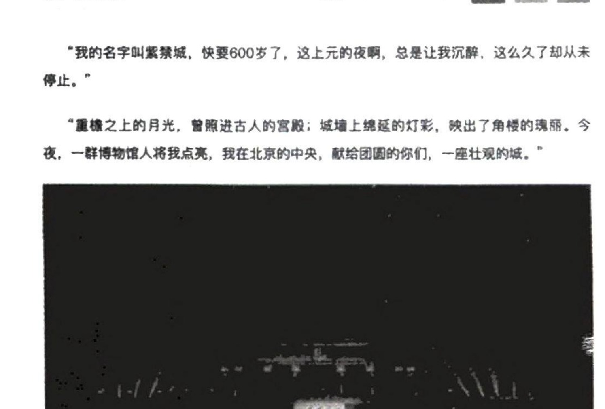
我们的需求是提取该页面中的标题、正文、发布时间等。想必大家可能见过,现在不少浏览器提供了阅读模式,例如我们用 Safari 浏览器打开示例新闻页面,然后开启阅读模式,效果将如图14-2所示。
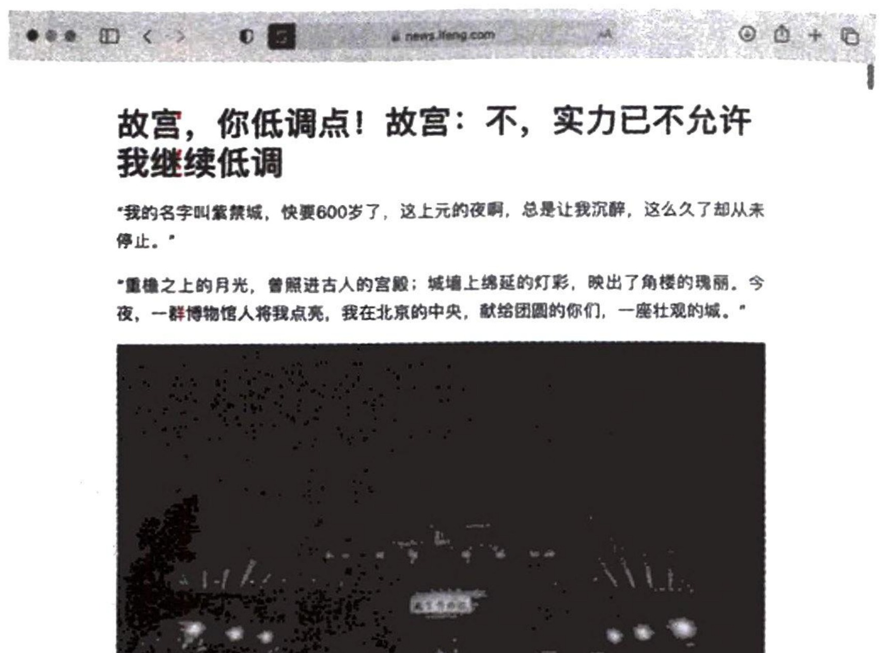
可以看到页面变得非常清爽,只保留了标题和正文。原先页面中的导航栏、侧栏、评论等统统消失了。这是怎么做到的?难道提前针对这个页面写好提取规则了吗?当然不可能。其实是阅读模式内置了一些页面解析算法,可以自动抽出并呈现页面中的标题、正文等内容。
本节中,我们就来了解一下页面的智能解析相关的知识。
2. 页面的智能解析
所谓页面的智能解析,就是不需要再专门写提取规则,而是利用算法直接计算页面中特定元素的位置和提取路径。针对我们的需求,可以通过算法计算出新闻标题是什么,正文应该在哪个区域,发布时间是什么时候。
其实智能解析操作起来非常难,人在看到网页上的一篇文章时,可以迅速找到它的标题、正文、发布时间、广告位、导航栏等。但把这篇文章放在机器面前,机器面对的仅仅是一系列 HTML 代码,怎么做到智能提取呢?其中融合了多方面的信息和规律。
标题:其字号一般比较大,长度通常介于1句话和2句话之间,位置一般在页面上方,且大多数时候和 title节点里的内容一致。
正文:其内容一般最多,且包含多个p标签(段落)或者img标签(图片),宽度一般占页面的三分之二,文本密度(字数除以标签数量)比较大。
时间:不同语言的页面中显示的时间格式可能不同(如2021-02-20或者2021/02/20等,也可能是美式的记法),但格式的种类是有限的,可以通过特定的模式识别。
广告:其标签一般会带有 ads字样,另外大多数广告会处于文章底部、页面侧栏,并包含一些特定的外链内容。
所以说,页面中的内容对应的节点是有一定特征的,包括节点位置、节点大小、节点标签、节点内容、节点文本密度等。智能提取除了利用这些特征,在很多情况下还需要借助视觉特征和文本特征,因此其中结合了算法计算、视觉处理、自然语言处理等多方面内容。把这些特征综合运用起来,再经过大量的数据训练,是可以得到一个非常不错的效果的。
3. 业界进展
随着互联网的发展和信息的爆炸式增长,互联网上的页面会越来越多,页面的渲染方式也会发生很大的变化,智能解析能够大大减轻我们抽取信息的工作量。
其实,工业界已经有了落地的智能解析算法应用,例如 Diffbot、Embedly 等。目前,Diffbot 的提取效果算是比较领先的,其官方曾做过一个评测,使用不同的算法依次提取 Google 新闻上一些文章的标题和文本,然后与真实标注的内容做比较,比较指标就是文字的正确率和召回率,以及根据二者计算出的 F1 分数,结果如下。
正确率:0.968。
召回率:0.978。
F1:0.971。
我们可以发现,对于 Google 新闻的这些数据,Diffbot 大约能达到 97% 的正确率,效果还算不错。
Diffbot 是一家专门做网页智能提取的公司,提供了许多 API 来自动解析各种页面。其算法依赖于自然语言技术、机器学习、计算机视觉、标记检查等,并且所有页面都会考虑当前页面的样式以及可视化布局,还会分析其中包含的图像内容、CSS 甚至 Ajax 请求。在计算一个节点的置信度时,会考虑该节点和其他节点的关联关系,基于周围的标记来计算每个区块的置信度。总之,Diffbot 自 2010 年以来一直致力于提供这方面的服务,Diffbot 就是从页面解析起家的,现在也专注于页面解析服务,正确率高自然不足为怪了。
但 Diffbot 的算法并没有开源,只是以商业化 API 的形式售卖,我目前没有找到介绍其具体算法的论文。不过不妨碍这里拿它做案例,可以稍微体会一下智能解析算法能达到的效果。
4. Diffbot
打开 Diffbot 的官网(https://www.diffbot.com/),首先注册一个账号,会有 15 天的免费试用期,注册之后会获得一个 Developer Token,这就是使用 Diffbot 接口服务的凭证。
接下来切换到测试页面(https://www.diffbot.com/dev/home/),测试一下 Diffbot 的解析效果。这里我们选择的测试页面就是本节开始所述的页面,填入页面链接,API 类型选择“Article API”,然后点击“Test Drive”按钮,就会出现对测试页面进行解析的结果,如图14-3所示。
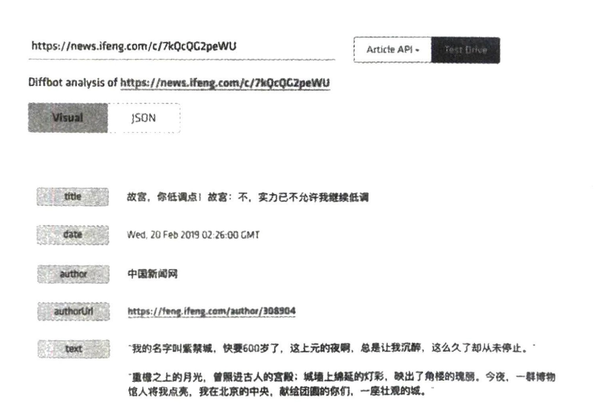
可以看到,Diffbot 帮我们提取了标题(title)、发布时间(date)、发布机构(author)、发布机构链接(authorUrl)和正文内容(text),而且目前来看都十分正确,发布时间也在自动识别之后做了转码,格式是标准的。继续往下,看还有什么字段。可以看到html字段,和text 字段不同的是,它包含文章内容的真实 HTML代码,因此里面会包含图片,如图14-4所示。
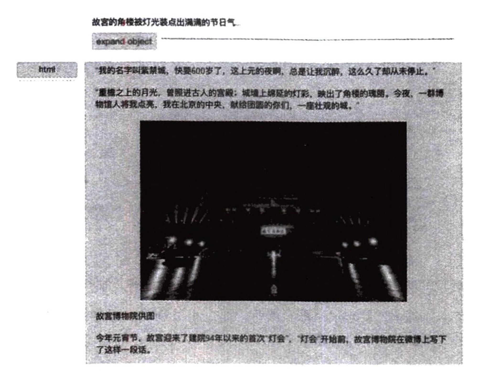
之后还有 images 字段,以列表形式返回了文章套图及每一张图的链接,另外还返回了文章的站点名称、页面所用语言等,如图14-5所示。
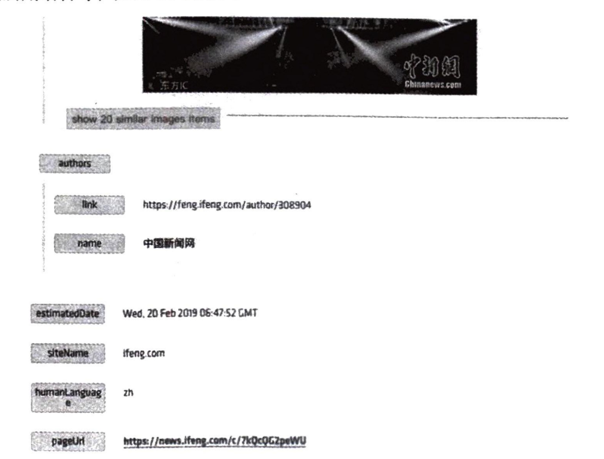
当然,我们也可以选择 JSON 格式的返回结果,其内容会更加丰富,例如图片的宽度、高度、图片描述,以及面包屑导航等,如图14-6所示。
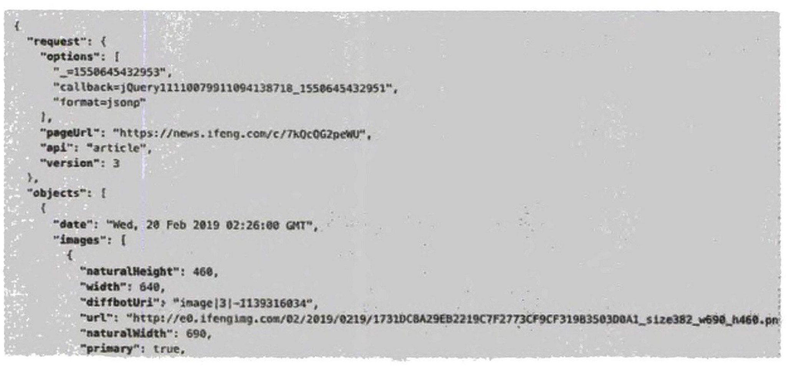
经过手工核对,发现其返回的结果完全正确,这说明正确率还是很高的。所以,如果你对正确率的要求没有那么严苛,那么使用Diffbot可以快速提取页面中所需的结果,省去了绝大多数手工劳动,可以说非常赞。另外,Diffbot 也提供了官方的API文档,如Analyze API、Article API、Discussion API等。下面我们以 Article API 为例说明一下它的用法,其官方文档地址为 https://www.diffbot.com/dev/docs/article/,API调用地址为 https://api.diffbot.com/v3/article。我们可以用GET方式请求这个API,其必选参数有下面两个。
token:开发者的 Token。
url:要解析的URL链接。可选参数有下面几个。
fields:用于指定返回哪些字段,默认已经有一些一定要返回的字段,还可以指定需要额外返回的字段。
paging:如果文章跨了多页,那么将这个参数设置为false可以禁止多页内容拼接。
maxTags:用于设置返回的Tag 的最大数量,默认是10(单位为个)。
tagConfidence:用于设置置信度的阈值,置信度超过这个值的Tag 才会被返回,默认是0.5。
discussion:将其值设置为false,代表不会解析评论内容。
timeout:解析时的最长等待时间,默认是30(单位为秒)。
callback:为JSONP类型的请求设计的回调。其中大家关注更多的应该是 fields,这里我专门梳理了一下需要返回的字段,首先是一些一定要返回的字段。
type:文本类型,这里就是 article。
title:文章的标题。
text:文章的纯文本内容,如果是分段内容,那么里面会以换行符分隔每一段。
html:提取结果的HTML内容。
date:文章的发布时间,格式为RFC 1123。
estimatedDate: 如果发布时间不太明确,就返回一个预估的时间;如果发布时间超过两天或者没有发布日期,就不返回这个字段。
author:文章的发布机构。
authorUrl:发布机构链接。
discussion:评论内容,和 Discussion API 的返回结果一样。
humanLanguage:语言类型,如英文、中文等。
numPages:如果文章是多页的,那么这个参数会控制最大的翻页拼接数。
nextPages:如果文章是多页的,那么这个参数可以指定文章的后续链接。
siteName:站点名称。
publisherRegion:文章的发布地区。
publisherCountry:文章的发布国家。
pageUrl:文章的链接。
resolvedPageUrl:如果文章是从 pageUrl重定向过来的,则返回此内容。
tags: 文章的标签或者文章包含的实体,根据自然语言处理技术和DBpedia 计算生成,是一个列表,里面又包含以下子字段。
label: 标签名。
count: 标签出现的次数。
score: 标签置信度。
rdfTypes: 如果实体可以由多个资源表示,那么返回相关的URL。
type: 标签类型。
uri: Diffbot Knowledge Graph 中的实体链接。
images:文章中包含的图片。
videos:文章中包含的视频。
breadcrumb:面包屑导航信息。
diffbotUri:Diffbot 内部的URL链接。
以上固定字段就是“如果可以返回就一定会返回”的字段,是不能定制的。我们也可以通过fields参数扩展如下可选字段。
quotes:引用信息。
sentiment:文章的情感值,取值在-1和1之间。
links:所有超链接的顶级链接。
querystring:请求的参数列表。
好,以上便是Article API 的用法,大家可以在申请之后使用它做智能解析。下面用一个实例来看一下这个API 的用法:
import requests, json
url = 'https://api.diffbot.com/v3/article'
params = {
'token': '77b41f6fbb24496d5113d528306528fa',
'url': 'https://news.ifeng.com/c/7kQcQG2peWU',
'fields': 'meta'
}
response = requests.get(url, params=params)
print(json.dumps(response.json(), indent=2, ensure_ascii=False))这里首先指定 Article API 的链接,然后指定了 params 参数,即 GET 请求的参数。参数中包含必选的 token、url 字段,以及可选的 fields 字段,fields 字段的内容为 meta 标签。运行结果如下:
{
"request": {
"pageUrl": "https://news.ifeng.com/c/7kQcQG2peWU",
"api": "article",
"fields": "sentiment, meta",
"version": 3
},
"objects": [
{
"date": "Wed, 20 Feb 2019 02:26:00 GMT",
"images": [
{
"width": 640,
"diffbotUri": "image|3|-1139316034",
"url": "http://e0.ifengimg.com/02/2019/0219/1731DC8A29EB2219C7F2773CF9CF319B3503D0A1_size382_w690_h460.png",
"naturalWidth": 690,
"primary": true,
"height": 426,
"naturalHeight": 460
}
],
"//": "...",
"author": "中国新闻网",
"estimatedDate": "Wed, 20 Feb 2019 06:47:52 GMT",
"diffbotUri": "article|3|1591137208",
"siteName": "ifeng.com",
"type": "article",
"title": "故宫,你低调点!故宫:不,实力已不允许我继续低调",
"breadcrumb": [
{
"link": "https://news.ifeng.com/",
"name": "资讯"
},
{
"link": "https://news.ifeng.com/shanklist/3-35197-/",
"name": "大陆"
}
],
"humanLanguage": "zh",
"meta": {},
"og": {
"og:time": "2019-02-20 02:26:00",
"og:image": "https://eo.ifengimg.com/02/2019/0219/1731DC8A29EB2219C7F2773CF9CF319B3503D0A1_size382_w690_h460.png",
"og:category": "凤凰资讯",
"og:webtype": "news",
"og:title": "故宫,你低调点!故宫:不,实力已不允许我继续低调",
"og:url": "https://news.ifeng.com/c/7kQcQG2peWU",
"og:description": "我的名字叫紫禁城,快要600岁了,这上元的夜啊,总是让我沉醉,这么久了却从未停止。"
},
"referrer": "always",
"description": "我的名字叫紫禁城,快要600岁了,这上元的夜啊,总是让我沉醉,这么久了却从未停止。",
"keywords": "故宫紫禁城故宫博物院灯光元宵节博物馆一票难求元之中新社午门杜洋藏品文化皇帝清明上河图元宵千里江山图卷",
"title": "故宫,你低调点!故宫:不,实力已不允许我继续低调_凤凰资讯",
"authorUrl": "https://feng.ifeng.com/author/308904",
"pageUrl": "https://news.ifeng.com/c/7kQcQG2peWU",
"html": "<p>“我的名字叫紫禁城,快要600岁了,这上元的夜啊,总是让我沉醉,这么久了却从未停止。</p>"
}
]
}...</blockquote> </blockquote>",
"text":"“我的名字叫紫禁城,快要600岁了,这上元的夜啊,总是让我沉醉,这么久了却从未停止。”“...”,
"authors": [
{
"name":"中国新闻网”,
"link": "https://feng.ifeng.com/author/308904"
}
}
]
}
]如上返回内容以 JSON 格式呈现,包含文章的标题、正文、发布时间等内容。可见,不需要配置任何提取规则,我们就完成了页面的分析和爬取。另外,Diffbot 提供了几乎所有编程语言的SDK支持(详见https://www.diffbot.com/dev/docs/libraries/),因此我们也可以使用SDK 实现上述功能。如果使用的是 Python 语言,那么可以直接使用Python 的SDK——DiffbotClient,链接为 https://github.com/diffbot/diffbot-python-client。这个库并没有发布到PyPi, 需要自己下载并导入使用。此外,这个库是使用Python2编写的,本质上就是调用了 requests 库,大家感兴趣的话可以看一下。下面是一个调用示例:
from client import DiffbotClient, DiffbotCrawl
diffbot = DiffbotClient()
token = 'your_token'
url = 'http://shichuan.github.io/javascript-patterns/'
api = 'article'
response = diffbot.request(url, token, api)运行这段代码,就可以调用 Article API 来分析我们想要的URL链接了,返回结果跟前面的结果类似。
5. 总结
本节介绍了智能解析的原理和Diffbot的用法。通过Diffbot 的案例,我们大体了解了智能解析算法可以提取什么信息以及提取正确率如何。但Diffbot 总归是一个商业化的API,我们不能只知其然,不知其所以然。虽然很多时候只能靠调用商用API的方式智能解析页面,但一方面是费用高昂,另一方面是如果出了问题,没办法做针对性的处理和优化,我们显得非常被动。如果我们能了解智能解析算法的核心原理和实现,很多问题就迎刃而解了。之后几节我们会针对资讯类网站,介绍智能解析算法的一些原理和实现流程。对于大部分资讯类网站来说,除去一些特殊的页面(如登录页面、注册页面等),剩下的页面可以分为两大类——列表页和详情页,前者提供多个详情页的索引导航信息,后者则包含具体的内容。我们会针对这两类页面介绍如下知识点。
详情页中文章标题、正文、发布时间的提取算法和实现。
列表页中链接列表的提取算法和实现。
如何判断一个页面是详情页还是列表页。
14.2 详情页智能解析算法简介
本节中我们来了解一下详情页提取算法的基本思路,主要包括如下内容。
我们定义的详情页是指怎样的页面。
详情页中的哪些信息是需要我们提取的关键信息。
介绍标题、正文、发布时间的提取算法。
1. 怎样的页面属于详情页
先划定一个大的范围。我们处理的网站属于资讯类网站,如新闻网站、博客网站等。这类网站通常包含两种页面:一种是包含导航信息的列表页,如新浪新闻的首页;另一种是从列表页点击导航信息后进入的页面,如一篇新闻的页面。例如,新浪新闻的首页
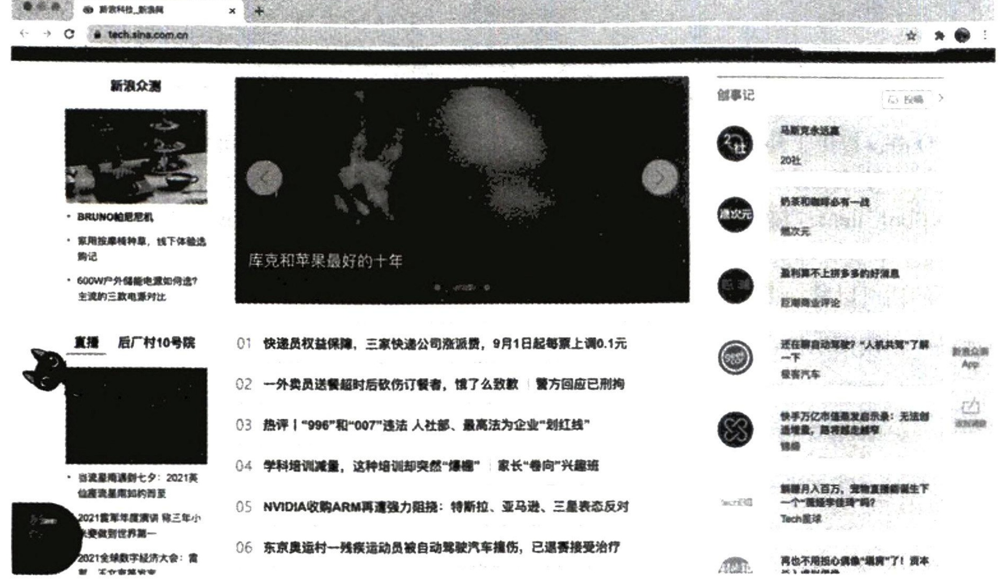
凤凰网的一篇新闻的页面如图14-8所示,我们称这类页面为详情页。
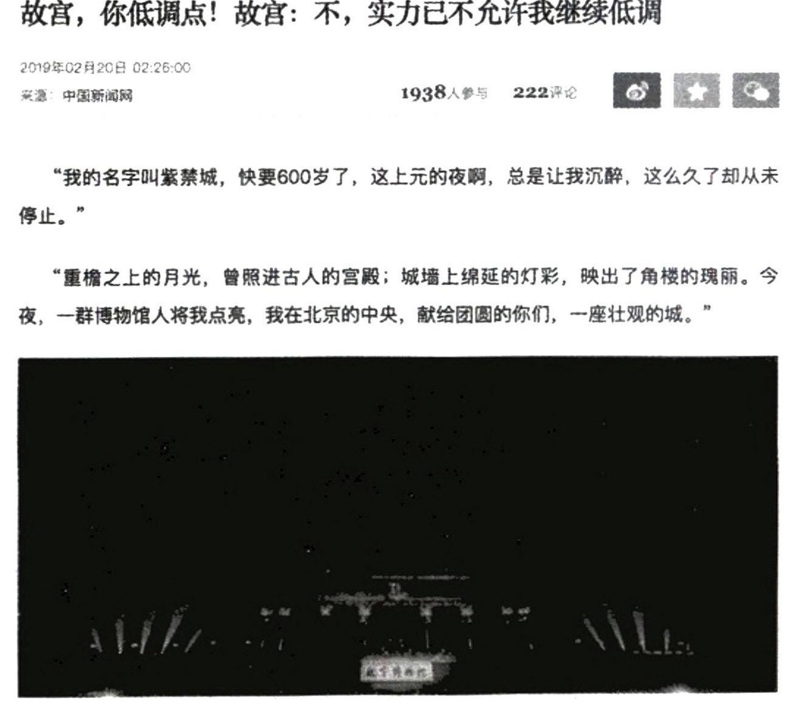
可以看到,这两类页面有很大不同,列表页通常包含许多详情页的标题和链接,而不会呈现具体的内容,布局样式也是千变万化,而且可能分多个区块。详情页则是某个内容的展示页面,通常包含醒目的标题、发布时间和占据版面最大的正文部分。另外,详情页的侧栏通常会有一些关联或推荐的内容列表、页面头部的导航链接、评论区、广告区等。到现在,相信大家对分辨列表页和详情页有了基本的概念。
2. 提取内容
这里主要了解一下我们要在详情页中提取的内容。一般来说,详情页包含的信息非常多,例如标题、发布时间、发布来源、作者、正文、封面图、评论数目、评论内容等,不过由于其中一些内容并不常用,而且提取算法大同小异,因此本节主要介绍3个关键信息的提取算法——标题、正文、发布时间。还是以14.1节开始的新闻页为例,我们需要提取图14-9 中框选出来的内容。
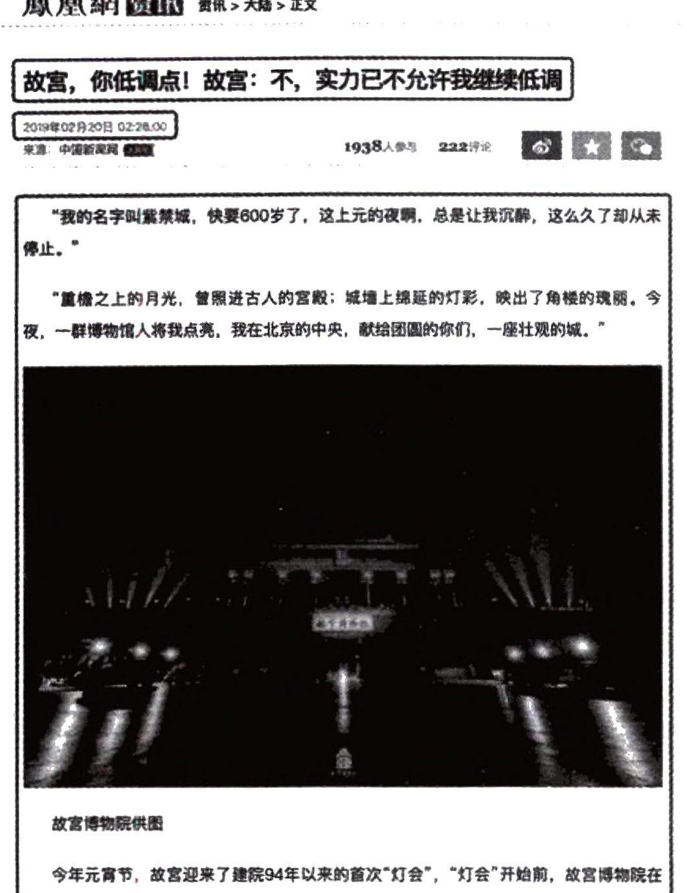
下面来分析这三部分内容的特点。
标题:上方矩形框选的内容,是页面的主标题,通常字号比较大,比较醒目,能概括本页面的内容。
正文:下方矩形框选的内容,是页面的核心,这里由于篇幅所限,因此未在图 14-9 中将正文内容展现完整。
发布时间:中间矩形框选的内容,通常在页面标题的下方或者正文的下方,格式大多为常见的时间格式,代表本页面内容的发布时间。
后面会分别介绍这三部分内容的提取思路。
3. 准备工作
现在很多网页是由 JavaScript 渲染而成的,导致通过请求获取的页面源代码不一定是我们在浏览器看到的页面源代码,这里要求我们提取的必须是渲染完整的 HTML 代码。首先把示例详情页的 HTML 代码保存下来。在浏览器中打开这个页面,打开开发者工具并切换到 Elements 选项卡,如图 14-10 所示。
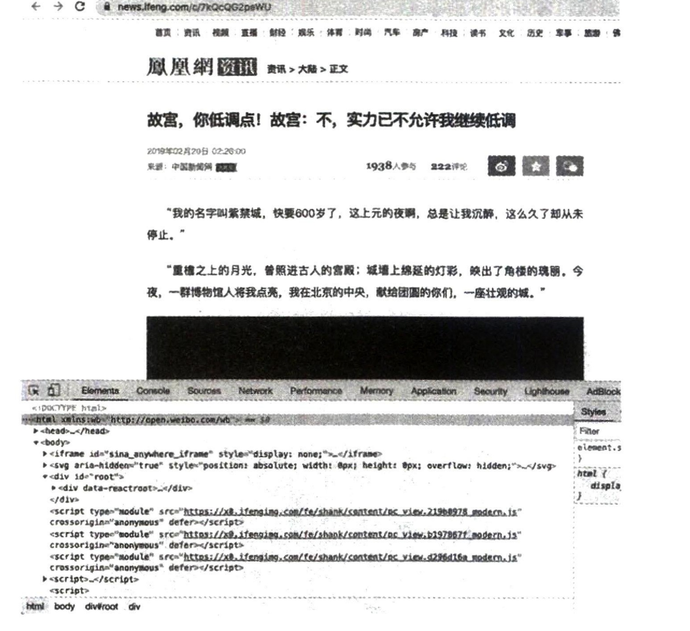
然后右击 html 节点,在弹出菜单中选择 Copy → Copy element,复制整个页面的源代码,如图 14-11 所示。
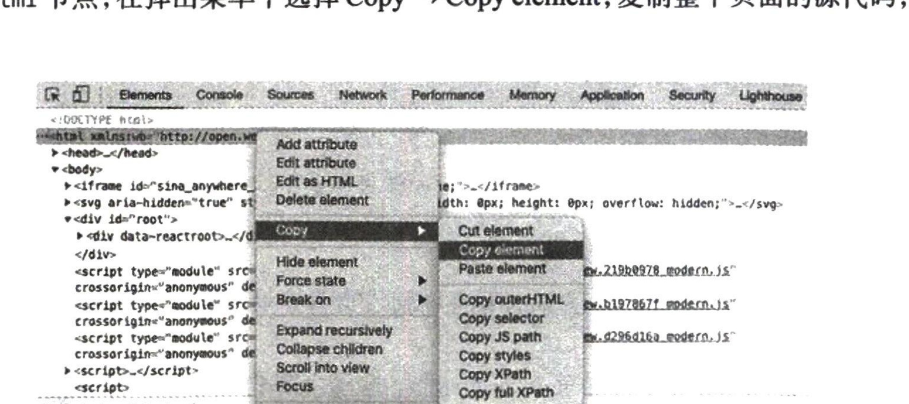
接着新建一个 HTML 文件,命名为 detail.html,并格式化源代码,14.3 节会用到这个文件。
4. 提取标题
一般来说,标题是相对比较好提取的,根据几个关键信息就能完成绝大多数标题的提取。详情页的标题一般包含在title节点中,例如:
<title>故宫,你低调点!故宫:不,实力已不允许我继续低调_凤凰网资讯_凤凰网</title>此时如果直接进行提取,那么得到的标题内容如下:故宫,你低调点!故宫:不,实力已不允许我继续低调凤凰网资讯_凤凰网但真实的标题的内容应该为:故宫,你低调点!故宫:不,实力已不允许我继续低调所以,一味提取 title 节点内的内容并不准确,因为网站会额外增加一些信息,例如这里网站本身的信息。此时怎么办呢?在绝大部分情况下,标题是由h节点表示的,一般为h1、h2、h3、h4等,其内部的文本就是完整的标题,那么问题又来了,html里面有那么多h节点,怎么确定哪个是标题对应的h节点呢?答案你应该也想到了,把title节点和h节点的内容结合起来不就好了吗?于是可以初步总结出下面两步提取思路。(1)提取页面的h节点(如h1、h2等),将其内容和title节点的文本做比对,和后者相似度最高的内容很可能就是详情页的标题。(2) 如果未在页面中找到h节点,则只能使用 title节点的文本作为结果。一般来说,使用以上方法可以应对90%以上的标题提取问题。另外,有些网站为了使 SEO 效果比较好,会添加一些 meta标签,如url、title、keywords、category等,这些信息也可以成为参考依据,用它们进一步校验或补充网站的基本信息。在上面的例子中,就有一个meta 节点:
<meta property="og:title" content="故宫,你低调点!故宫:不,实力已不允许我继续低调">可以看到其中指定了property为og:title,这是一种常见写法,其内容正好是标题信息,于是我们能通过它提取标题。综合以上内容,借助title节点、h节点和meta节点,我们已经可以应对绝大多数的标题提取了。
5. 提取正文
正文可以说是详情页中最难提取且最为重要的部分,如果不能有效地把正文内容提取出来,那么这次解析相当于失败了一大半。观察正文内容的特征,能够发现一些规律。
正文内容通常被包含在body 节点的p节点中,而且p节点一般不会独立存在,而是存在于 div等节点内。
正文内容所在的p节点中也不一定全是正文内容,可能掺杂噪声,如网站的版权信息、发布人、文末广告等,这些都属于噪声。
正文内容所在的p节点中会夹杂 style、script等节点,这些并非正文内容。
正文内容所在的p节点内可能包含code、span等节点,这些内容大部分属于正文中的特殊样式字符,往往也需要归类到正文内容中。受开源项目 GeneralNewsExtractor 和论文《基于文本及符号密度的网页正文提取方法》(以下简称论文)的启发,我得到了一个比较有效的正文文本提取依据指标——文本密度。
文本密度是什么呢?简单理解就是单位标签内包含的文字个数。例如一个p节点内包含100个字,那么可以简单地计算出文本密度为100;如果包含5个字,那么文本密度为5。一般来说,正文区域以一个节点为一个段落,而一个段落包含的字通常比较多,文本密度可能上百;对于其他区域,例如页面导航区域,通常会包含多个节点,这些链接可能总共也就十几二十个字,因此文本密度要低很多。综上,文本密度可以作为判断正文内容的重要参考指标。
当然,论文本身不仅局限于纯文本和节点的大小比例,还考虑到了文本中包含的超链接。论文中定义,如果i为HTML DOM 树中的一个节点,那么该节点的文本密度为:
TD₁ =T-LT,TG-LTG,
如下为其中各个符号的含义。
TD:节点的文本密度。
T:节点中字符串的字数。
LT:节点中带链接的字符串的字数。
TG:节点中标签的数量。
LTG:节点中带链接的标签的数量。
以上各项需要好好理解一下,其实文本密度基本上等同于单位标签内包含的文字个数,这里额外考虑了节点内包含超链接的情况。因为一般而言,正文区域带超链接的情况是比较少的,而侧边栏、页面导航等区域,带超链接的概率非常高,所以这些地方的文本密度就会低下来,上面那么算能够更好地排除这些内容的干扰。
另外,论文中还提到了一个指标,叫作符号密度。研究发现,正文中一般会带标点符号,而网页链接、广告信息由于文字比较少,通常是不包含标点符号的,因此我们还可以借助符号密度排除一些内容。
论文中对于符号密度的定义如下:SbD; =T-LT,Sb, +1
如下为其中各个符号的含义。
SbD;:节点的符号密度。
T:节点中字符串的字数。
LT:节点中带链接的字符串的字数。
Sb;:节点中符号的数量(分母另外加1是为了确保除数不为0)。可以看出,符号密度为文字数量和符号数量的比值。
论文的作者经过多次实验,发现利用文本密度和符号密度相结合的方式提取正文信息能取得很不错的效果,可以结合二者为每个节点分别计算一个分数,分数最高的节点就为正文内容所在的节点。分数计算公式如下:
Score, = In SDxTD; × lg(PNum, + 2) × InSbD;如下为其中各个符号的含义。
Score:节点的分数。
SD:所有节点的文本密度标准差。
TD:节点i的文本密度。
PNum:节点i包含的p节点的数量。
SbD:节点i的符号密度。遍历各个节点,利用该公式为每个节点计算分数,然后根据最终得分确定正文节点,提取正文内容。通过对比实验数据,可知一些中文新闻网站的正文内容提取正确率能达到90%以上,甚至部分可以达到99%。另外,论文作者还在不同网站上对该算法进行了评测,计算出了P(Precision)、R(Recall)、Score (F1-Score)值,结果如表14-1所示。
表14-1 在不同网站对算法做的评测
| 网站 | P | R | Score |
|---|---|---|---|
| cleanEval-Eng | 93.88% | 77.43% | 73.11% |
| cleanEval-Zh | 81.62% | 69.18% | 62.16% |
| 凤凰网新闻 | 97.51% | 98.18% | 95.76% |
| 参考信息 | 98.80% | 99.88% | 98.68% |
可以看到,该算法在凤凰网新闻上的正确率可达95%以上。我们已经可以借助以上算法得到不错的正文内容提取效果了,满足一般需求可以说没问题。如果想追求更高的正确率,还可以结合视觉信息。因为在多数情况下,正文所占的版面是最大的,所以可以通过计算节点所占区域的大小来排除一些干扰,例如找到了两块内容都疑似正文,而它们所占的网页面积一个很大,一个很小,那么面积大的是正文内容的可能性会更大。
6. 提取发布时间
对于发布时间,也有一些线索可以利用。和标题类似,一些正规的网站为了使SEO效果比较好,会把时间信息放到 meta 节点内,例如我们的例子中就有这样一个 meta 节点:
<meta name="og:time" content="2019-02-20 02:26:00">这个 meta 节点指定了 name 为og:time,这是一种常见写法,其内容正好就是发布时间,我们可以通过这部分信息提取发布时间。注意,不同网站的 meta 节点中 name属性的值大概率不一样,根据经验和调研,我得到了一些写法,如:
<meta property="rnews:datePublished" content="2019-02-20 02:26:00">
<meta itemprop="datePublished" content="2019-02-20 02:26:00">
<meta name="publication_date" content="2019-02-20 02:26:00">
<meta name="PublishDate" content="2019-02-20 02:26:00">可以看到,不同网站的写法差异还是蛮大的,我们可以总结常见的写法,一旦匹配成功,那么其content 属性值极有可能就是发布时间。但是,并不是所有网站都会加上这样的meta节点,如果碰到没有meta节点的网站,该怎么办呢?我们知道,时间有一些固定的写法,如2019-02-20 02:26:00。而且发布时间通常会包含一些关键的字符,例如“发布”“发表于”等,它们可以作为重要的参考依据。因此,一些固定的匹配模式往往也能起到不错的效果。例如,定义一些正则表达式,或者基于某种特定的模式来提取时间信息。这时可能有人会说,如果正文内容本身包含时间,或者侧栏、底栏部分包含时间,不会提取错吗?
对于正文内容本身包含时间的情况,根据提取的正文结果过滤即可,例如直接将正文从提取目标中删除。
对于侧栏或底栏部分包含时间的情况,可以根据节点距离算得结果。发布时间往往和正文距离较近,甚至紧贴着,而侧栏或底栏的时间常常分布在其他区块,其日期节点和正文节点的距离相对较远,这样就能找到权重最高的时间节点了。综上所述,发布时间的提取标准如下。
根据 meta 节点的信息提取时间,提取结果大概率就是真实的发布时间,可信度较高。
根据正则表达式提取时间,如果匹配到一些置信度比较高的规则,那么可以直接提取;如果匹配到置信度不高的规则或者提取到多个时间信息,则可以进行下一步的提取和筛选。
针对上面的第二种情况,通过计算节点和正文的距离,再结合其他相关信息筛选出最优节点作为结果。按照以上标准,可以提取出绝大部分的发布时间。
7. 总结
本节中我们介绍了详情页的3个关键信息——标题、正文、发布时间的提取思路,了解了基本原理之后,我们在14.3节会用代码实现其中的一些解析算法。
14.3 详情页智能解析算法的实现
本节中我们来动手实现详情页的提取算法。
1. 本节目标
还是以14.1节开始时的页面为例,用算法提取其标题、正文和发布时间。注意由于部分算法比较复杂,因此本节介绍的算法是简化后的版本,更多细节处理可以参考本节最后的说明。
2. 准备工作
在14.2节,我们已经将案例页面的HTML代码保存成了文本文件 detail.html。这里我们主要会用XPath 解析页面和操作节点,所以需要用到lxml库,如果尚未安装该库,可以参考https://setup.scrape.center/lxml 里面的说明。定义如下代码,将HTML代码里面的字符转化成lxml里面的HtmlElement对象:
from lxml.html import HtmlElement, fromstringhtml = open('detail.html', encoding='utf-8').read()
element = fromstring(html=html)这里的 element 其实就是整个网页对应的HtmlElement对象,它的根节点就是html,我们在解析页面的时候会用到它,从中可以提取我们想要的标题、正文和发布时间。
3. 提取标题
首先来实现标题的提取,根据14.2节的内容,提取分为3个步骤。(1)查找 meta 节点里的标题信息,如果能查到,那结果通常是非常准确的,直接返回即可。(2) 查找 title 节点里的标题信息,由于title 中通常会包含冗余信息,因此需要将查找结果和h节点中的内容做比对,以便得到更准确的结果。
(3)如果上述两个步骤都不能得到有效结果,则可以直接用title节点中的内容作为结果(保底)。当然,此逻辑还存在很多可以优化的地方,但应该能够应对大多数详情页的标题提取任务。接下来就用代码实现一下这个逻辑吧。首先定义利用XPath从 meta 节点中提取标题的规则:
METAS = [
'//meta[starts-with(@property, "og:title")]/@content',
'//meta[starts-with(@name, "og:title"))/@content',
'//meta[starts-with(@property, "title")]/@content',
'//meta[starts-with(@name, "title")]/@content',
'//meta[starts-with(@property, "page:title")]/@content'
]这里我们定义了一系列XPath,用于匹配 meta 节点并提取 content 属性的值。然后我们实现一个extract_by_meta 方法:
def extract_by_meta(element: HtmlElement) -> str:
for xpath in METAS:
title = element.xpath(xpath)
if title:
return ''.join(title)这里遍历了 METAS的内容,然后依次进行匹配,如果能够匹配到结果,就直接返回。这里可以尽量把更常见和更精准的XPath 放到METAS的前面,同时避免填写一些置信度较低的XPath,以便提取出更准确的内容。接下来,对于 title节点,就是直接提取其纯文本内容;对于h节点,则是提取h1节点、h2节点和h3 节点的内容,通过基本的XPath 表达式就可以实现。这部分的代码实现如下:
def extract_by_title(element: HtmlElement):
return '.join(element.xpath('//title//text()')).strip()
def extract_by_h(element: HtmlElement):
hs = element.xpath('//h1//text()|//h2//text()|//h3//text()')
return hs or []这里我们提取了 title节点、h1节点、h2节点和h3节点的信息,然后返回了它们的纯文本内容,其中 extract_by_title 方法返回的是字符串类型的内容,extract_by_h方法返回的是包含h节点中所有纯文本内容的列表。下面我们依次调用3个方法,看看针对这个案例,结果是怎样的:
title_extracted_by_meta = extract_by_meta(element)
title_extracted_by_h = extract_by_h(element)
title_extracted_by_title = extract_by_title(element)运行结果如下:title_extracted_by_meta 故宫,你低调点!故宫:不,实力已不允许我继续低调title_extracted_by_h['故宫,你低调点!故宫:不,实力已不允许我继续低调','为您推荐','精品有声','好书精选'] title_extracted_by_title 故宫,你低调点!故宫:不,实力已不允许我继续低调_凤凰网可以观察到,3个方法返回的结果差不多,都包含真实的标题信息,另外后两个结果中有一些不太一样的内容。如我们所料,title_extracted_by_meta 是完全正确的标题。假设不存在和 meta 节点相匹配的结果,如何依靠title_extracted_by_title 和 title_extracted_by_h 得到真实的标题呢?可以观察到,title_extracted_by_title 相对真正的标题多了网站名称,title_extracted_by_h是h节点组成的列表,其中有一个是真正的标题。有了这两部分信息,只需要求得和 title_extracted_by_title 最相似的h节点的内容就可以了。
可以采取的解决方案有很多,例如直接使用最基本的相似度算法——Jaccard算法,即用两个字符串的交集字符数量除以两个字符串的并集字符数量。代码实现如下:
def similarity(s1, s2):
if not s1 or not s2:
return 0
s1_set = set(list(s1))
s2_set = set(list(s2))
intersection = s1_set.intersection(s2_set)
union = s2_set.union(s2_set)
return len(intersection) / len(union)这里我们定义了一个 similarity方法,它接收两个字符串: s1和s2。首先该方法将s1和s2的字符拆分为集合,然后求出两个集合的交集和并集,最后返回交集字符数量和并集字符数量的比值。我们来验证一下这个结果,如果s1和s2完全相同,那么返回的结果就是1;如果s1和s2毫不相干,那么返回的结果就是0。这个算法并没有考虑字符的数量和重复度,因此存在一定的局限性,但用来求解一般情况下的相似度已经足够了,而且计算速度非常快。接下来只需要遍历 title_extracted_by_h的每个元素,然后找出和title_extracted_by_title 相似度最高的那个,就是真正的标题了。如果遍历完依然没有结果,就用title_extracted_by_title 作为最终结果。综上,可以把提取标题的过程定义成一个方法 extract_title:
def extract_title(element: HtmlElement):
title_extracted_by_meta = extract_by_meta(element)
title_extracted_by_h = extract_by_h(element)
title_extracted_by_title = extract_by_title(element)if title_extracted_by_meta:
return title_extracted_by_metatitle_extracted_by_h = sorted(title_extracted_by_h,
key=lambda x: similarity(x, title_extracted_by_title),
reverse=True)
if title_extracted_by_h:
return title_extracted_by_h[0]return title_extracted_by_title4. 提取正文
终于轮到重头戏——提取正文了,我们一起来实现14.2节介绍的文本密度和符号密度的计算吧。首先需要做一些预处理工作。html 节点内通常有很多噪声,非常影响正文内容的提取,script、style 这些内容不仅一定不会包含正文,还会严重影响文本密度的计算,所以有必要先定义一个预处理方法:
from lxml.html import HtmlElement, etreeCONTENT_USELESS_TAGS = ['meta', 'style', 'script', 'link', 'video', 'audio', 'iframe', 'source', 'svg', 'path','symbol', 'img', 'footer', 'header']
CONTENT_STRIP_TAGS = ['span', 'blockquote']
CONTENT_NOISE_XPATHS = [
'//div[contains(@class, "comment")]',
'//div[contains(@class, "advertisement")]',
'//div[contains(@class, "advert"))',
'//div[contains(@style, "display: none")]',
]def preprocess4content (element: HtmlElement):
#删除标签和内容etree.strip_elements (element, *CONTENT_USELESS_TAGS)
#只删除标签对
etree.strip_tags(element, *CONTENT_STRIP_TAGS)
#删除噪声标签
remove_children (element, CONTENT_NOISE_XPATHS)
for child in children (element):
#把span和strong 标签里面的文本合并到父级 p标签里面
if child.tag.lower() == 'p':
etree.strip_tags(child, 'span')
etree.strip_tags(child, 'strong')
if not (child.text and child.text.strip()):
remove_element(child)
# 如果 div 标签里没有任何子节点,就把它转换为p 标签
if child.tag.lower() == 'div' and not child.getchildren():
child.tag = 'p'这里我们定义了一些规则,CONTENT_USELESS_TAGS 代表一些噪声节点,直接调用 strip_elements 方法把这些节点及其内容删除即可。CONTENT_STRIP_TAGS 中节点的文本内容是需要保留的,但是标签可以删掉。CONTENT_NOISE_XPATHS 代表一些很明显不是正文的节点,如评论、广告等,直接删除就好。其中还调用了几个工具方法,这些方法的定义如下:
def remove_element(element: HtmlElement):
parent = element.getparent()
if parent is not None:
parent.remove(element)
def remove_children (element: HtmlElement, xpaths=None):
if not xpaths:
return
for xpath in xpaths:
nodes = element.xpath(xpath)
for node in nodes:
remove_element(node)
return element
def children(element: HtmlElement):
yield element
for child_element in element:
if isinstance(child_element, HtmlElement):
yield from children(child_element)这里还对一些节点做了特殊处理。例如对p节点内部的span 节点和 strong 节点,去掉其标签,只保留内容。对于没有子节点的div 节点,则将其换成p节点。当然,如果大家再想到什么细节,可以继续优化。预处理完毕之后,整个element因为没有了噪声和干扰数据,变得比较规整了。下一步,我们来实现文本密度、符号密度和最终分数的计算。为了方便处理,我会把节点定义成一个Python 对象,名字叫作 Element,它包含很多字段,代表某个节点的信息,例如文本密度、符号密度等。Element 的定义如下:
class Element(HtmlElement):
id: int = None
tag_name: str = None
number_of_char: int = None
number_of_a_char: int = None
number_of_descendants: int = None
number_of_a_descendants: int = None
number_of_p_descendants: int = None
number_of_punctuation: int = None
density_of_punctuation: int = None
density_of_text: float = None
density_score: float = None以下为其中包含的字段的简析。
id: 节点的唯一 id。
tag_name: 节点的标签值,例如 p、div、img 等。
number_of_char: 节点的总字符数。
number_of_a_char: 节点内带超链接的字符数。
number_of_descendants: 节点的子孙节点数。
number_of_a_descendants: 节点内带链接的节点数,即 a 的子孙节点数。
number_of_p_descendants: 节点内的 p 节点数。
number_of_punctuation: 节点包含的标点符号数。
density_of_punctuation: 节点的符号密度。
density_of_text: 节点的文本密度。
density_score: 最终评分。这些字段都是我们计算最终节点评分需要的,在此列举几个字段的计算方法:
def number_of_a_char(element: Element):
if element is None:
return 0
text = ''.join(element.xpath('.//a//text()'))
text = re.sub(r'\s*', '', text, flags=re.S)
return len(text)
def number_of_p_descendants(element: Element):
if element is None:
return 0
return len(element.xpath('.//p'))
PUNCTUATION = set('''!,。?、;：“”《》%()<>[]{}【】*~`,.?:;'"!%()''')
def number_of_punctuation(element: Element):
if element is None:
return 0
text = ''.join(element.xpath('.//text()'))
text = re.sub(r'\s*', '', text, flags=re.S)
punctuations = [c for c in text if c in PUNCTUATION]
return len(punctuations)
def density_of_text(element: Element):
if element.number_of_descendants - element.number_of_a_descendants == 0:
return 0
return (element.number_of_char - element.number_of_a_char) / \
(element.number_of_descendants - element.number_of_a_descendants)
def density_of_punctuation(element: Element):
result = (element.number_of_char - element.number_of_a_char) / \
(element.number_of_punctuation + 1)
return result or 1这里列举的几个计算方法,接收的参数都是 Element 对象,返回值是对应字段的结果。number_of_a_char 方法用于获取节点内带超链接的字符数,实现流程是查找当前节点内所有的 a 节点,然后统计这些 a 节点内的字符数量;number_of_punctuation 方法用于获取节点内标点符号的数量,实现流程是先获取节点内的所有文本,然后统计其中属于标点符号的字符,这里声明了标点符号的集合 PUNCTUATION;density_of_text 方法用于计算节点的文本密度,其计算规则和 14.2 节的公式完全一致,这里就是number_of_char 和 number_of_a_char 的差除以 number_of_descendants 和 number_of_a_descendants 的差;density_of_punctuation 方法用于计算节点的符号密度,其计算规则也和 14.2 节的公式完全一致,即 number_of_char 和 number_of_a_char 的差除以 number_of_punctuation 加1。通过这些方法,我们就可以计算 Element 对象的各个指标了,最重要的当属文本密度 density_of_text 和符号密度 density_of_punctuation。最后一步是利用 14.2节介绍的公式,计算节点的最终分数并选取分数最高的节点提取其文本内容,最终得到的结果就是正文内容。提取正文的方法定义如下:
def process(element: Element):
# 预处理
preprocess4content(element)
# 找出当前节点的子孙节点
descendants = descendants_of_body(element)
# 找出所有节点的 density_of_text 值的方差
density_of_text = [descendant.density_of_text for descendant in descendants]
density_of_text_std = np.std(density_of_text, ddof=1)
# 计算所有节点的 density_score 值
for descendant in descendants:
score = np.log(density_of_text_std) * \
descendant.density_of_text * \
np.log10(descendant.number_of_p_descendants + 2) * \
np.log(descendant.density_of_punctuation)
descendant.density_score = score
# 根据 density_score 对节点进行排序
descendants = sorted(descendants, key=lambda x: x.density_score, reverse=True)
descendant_first = descendants[0] if descendants else None
if descendant_first is None:
return None
paragraphs = descendant_first.xpath('.//p//text()')
paragraphs = [paragraph.strip() if paragraph else '' for paragraph in paragraphs]
paragraphs = list(filter(lambda x: x, paragraphs))
text = '\n'.join(paragraphs)
text = text.strip()
return text这里定义了一个 process方法,并向其中传入HTML根节点进行处理。首先调用 preprocess4content方法做预处理,然后调用 descendants_of_body 方法获取了 body 节点的所有子孙节点,赋值为descendants。接着对 descendants 进行遍历,计算出各个子孙节点的文本密度、符号密度以及文本密度的标准差,最后求得分数 density_score。求得所有子孙节点的 density_score之后,排序找出 density_score 最高的节点,然后提取其p节点的文本内容即为正文,如上代码中的最后一部分便实现了排序和提取过程。调用 process 方法来提取示例新闻页面的正文,运行结果如下:““我的名字叫紫禁城,快要600岁了,这上元的夜啊,总是让我沉醉,这么久了却从未停止。”“重檐之上的月光,曾照进古人的宫殿;城墙上绵延的灯彩,映出了角楼的瑰丽。今夜,一群博物馆人将我点一段话。”“半小时后,“紫禁城上元之夜”的灯光点亮了北京夜空。”“午门城楼及东西雁翅楼用白、黄、红三种颜色光源装扮!”“太和门广场变成了超大的夜景灯光秀场!”“图片来源:东方IC 版权作品请勿转载”“午门城宫博物院供图”“故宫的角楼被灯光装点出满满的节日气氛!”“故宫博物院供图”“令人惊叹的是,故宫的“网红”藏品《清明上河图》《千里江山图卷》在“灯会”中展开画卷。”“灯光版《清明上河图》”“以灯为笔,以屋顶为,故宫博物院最北端神武门也被灯光点亮!”“故宫博物院供图”“上元之夜,故宫邀请了劳动模范、北京榜样、快递小哥、环卫工人、解放军和武警官兵、消防指战员、公安干警等各界代表以及预约成功的观众,共3000人故宫博物院供图”“时间退回到两天前,故宫博物院发布了2月19日(正月十五)、20日(正月十六)即将举办“紫禁城上元之夜”文化活动的消息。”“图片来源:视觉中国”“18日凌晨,一众网友前往故宫博物院官网抢票,网站甚节就有诸多讲究。”“有灯无月不娱人,有月无灯不算春。”“春到人间人似玉,灯烧月下月如怠。”“满街珠翠游村女,沸地笙歌赛社神。”“不展芳尊开口笑,如何消得此良辰。”——唐伯虎《元宵》“明代宫中过上节,皇宵节晚会”。“2月18日,北京故宫午门调试灯光。中新社记者杜洋摄”“其中,灯戏颇为有趣。由多人舞灯拼出吉祥文字及图案,每人手执彩灯、身着不同颜色的服装,翩翩起舞,类似于现代的大型团体操表演。”“但这紫禁城,恭亲王奕与英法联军交换了《天津条约》批准书,并订立《中英北京条约》《中法北京条约》作为补充。”“战争结束了,侵略者摇身一变成了游客。一位外国“摄影师”拍下了当年的紫禁城,并在日记里写到,百年。”“直到上世纪40年代时,故宫的环境仍然并不是想象中的博物馆的状态。曾有故宫博物院工作人员撰文回忆,当时的故宫内杂草丛生,房倒屋漏,有屋顶竟长出了树木。光是清理当时宫中存留的垃圾、杂草就用单霁翔到任故宫院长。那时,他拿到的故宫博物院介绍,写了这座博物馆诸多的“世界之最”。可他觉得,当自己真正走到观众中间,这些“世界之最”都没有了。2月18日,北京故宫午门调试灯光。中新社记者杜洋摄外环境进行了大整治。游客没有地方休息,那就拆除了宫中的临时建筑、新增供游客休息的椅子;游客排队上厕所,那就将一个职工食堂都改成了洗手间;游客买票难,那就全面采用电子购票,新增多个售票点;馆。今年,持续整个正月的“过大年”展览和“紫禁城上元之夜”,让本该是淡季的故宫变得一票难求。在普通人眼中,近600 岁的故宫正变得越来越年轻。资料图:故宫博物院院长单霁翔。中新社记者刘关关摄。元宵节活动进行评估后,或结合二十四节气等重要时间节点推出夜场活动。你期待吗?作者:上官云宋宇晟可以看到,正文被成功提取出来了。
5. 提取发布时间
提取发布时间,一般根据两个内容,一个是 meta节点,一个是匹配规则。如果 meta 节点里包含发布时间的相关信息,那么通常就是对的,可信度非常高,提取出来并返回就行;如果不包含,就用正则表达式匹配一些时间规则来提取。首先我们根据 meta 节点提取,下面列出了一些用来匹配发布时间的XPath规则:
METAS = [
'//meta[starts-with(@property, "rnews:datePublished")]/@content',
'//meta[starts-with(@property, "article:published_time")]/@content',
'//meta[starts-with(@property, "og:published_time")]/@content',
'//meta[starts-with(@property, "og:release_date")]/@content',
'//meta[starts-with(@itemprop, "datePublished")]/@content',
'//meta[starts-with(@itemprop, "dateUpdate")]/@content',
'//meta[starts-with(@name, "OriginalPublicationDate")]/@content',
'//meta[starts-with(@name, "article_date_original")]/@content',
'//meta[starts-with(@name, "og:time")]/@content',
'//meta[starts-with(@name, "apub:time")]/@content',
'//meta[starts-with(@name, "publication_date")]/@content',
'//meta[starts-with(@name, "sailthru.date")]/@content',
'//meta[starts-with(@name, "PublishDate")]/@content',
'//meta[starts-with(@name, "publishdate")]/@content',
'//meta[starts-with(@name, "PubDate")]/@content',
'//meta[starts-with(@name, "pubtime")]/@content',
'//meta[starts-with(@name, "_pubtime")]/@content',
'//meta[starts-with(@name, "weibo:article:create_at")]/@content',
'//meta[starts-with(@pubdate, "pubdate")]/@content',
]以上规则都是通过经验总结得来的,可以自行添加或修改。然后我们同样定义一个方法 extract_by_meta 来提取发布时间,它接收一个HtmlElement 对象,该方法的定义如下:
def extract_by_meta(element: HtmlElement):
for xpath in METAS:
datetime = element.xpath(xpath)
if datetime:
return ''.join(datetime)这里其实就是遍历 METAS 中的XPath 规则,然后查找整个 HtmlElement 对象中有没有与当前规则匹配的内容,例如:
//meta[starts-with(@property, "og:published_time")]/@content这行代码就是查找 meta 节点中是否存在以og:published_time 开头的 property 属性,如果有,就提取出其 content 属性的值。假如我们的案例中刚好有一个meta 节点的内容为:
<meta name="og:time" content="2019-02-20 02:26:00">经过处理,它会匹配到下面的XPath 表达式:
//meta[starts-with(@name, "og:time")]/@content其实 extract_by_meta方法就成功匹配到时间信息了,提取出2019-02-20 02:26:00 这个值就是发布时间了。一般来说这个结果可信度非常高,可以直接将其返回作为最终的提取结果。可是,并不是所有页面都会包含这个meta节点。如果不包含,就要尝试用一些时间匹配规则来提取,其实就是定义一些时间的正则表达式:
REGEXES = [
"(\d{4}[-|/|.]\d{1,2}[-|/|.]\d{1,2}\s*?[0-1]?[0-9]:[0-5]?[0-9]:[0-5]?[0-9])",
"(\d{4}[-|/|.]\d{1,2}[-|/|.]\d{1,2}\s*?[2][0-3]:[0-5]?[0-9]:[0-5]?[0-9])",
"(\d{4}[-|/|.]\d{1,2}[-|/|.]\d{1,2}\s*?[0-1]?[0-9]:[0-5]?[0-9])",
"(\d{4}[-|/|.]\d{1,2}[-|/|.]\d{1,2}\s*?[2][0-3]:[0-5]?[0-9])",
"(\d{4}[-|/|.]\d{1,2}[-|/|.]\d{1,2}\s*?[1-2]?\d时[0-6]?\d分)([1-2]?\d时)",
"(\d{2}[-|/|.]\d{1,2}[-|/|.]\d{1,2}\s*?[0-1]?[0-9]:[0-5]?[0-9]:[0-5]?[0-9])",
"(\d{2}[-|/|.]\d{1,2}[-|/|.]\d{1,2}\s*?[2][0-3]:[0-5]?[0-9]:[0-5]?[0-9])",
"(\d{2}[-|/|.]\d{1,2}[-|/|.]\d{1,2}\s*?[0-1]?[0-9]:[0-5]?[0-9])",
"(\d{2}[-|/|.]\d{1,2}[-|/|.]\d{1,2}\s*?[2][0-3]:[0-5]?[0-9])",
"(\d{2}[-|/|.]\d{1,2}[-|/|.]\d{1,2}\s*?[1-2]?\d时[0-6]?\d分)([1-2]?\d时)",
# 此处省略了部分规则
"(\d{4}[-|/|.]\d{1,2}[-|/|.]\d{1,2})",
"(\d{2}[-|/|.]\d{1,2}[-|/|.]\d{1,2})",
"(\d{4}年\d{1,2}月\d{1,2}日)",
"(\d{2}年\d{1,2}月\d{1,2}日)",
"(\d{1,2}月\d{1,2}日)"
]由于内容比较多,因此这里省略了部分内容。其实就是一些常见的日期格式,日期格式毕竟是有限的,所以通过一些有限的正则表达就能完成匹配。接下来,定义一个正则搜索的方法:
import re
def extract_by_regex(element: HtmlElement) -> str:
text = ''.join(element.xpath('.//text()'))
for regex in REGEXES:
result = re.search(regex, text)
if result:
return result.group(1)这个方法中先查找了 element 的文本内容,然后对文本内容进行正则表达式搜索,符合条件的就直接返回。最后,我们直接把提取发布时间的方法定义为:
extract_by_meta(element) or extract_by_regex(element)这样就会优先根据 meta 节点提取,其次根据正则表达式提取。另外,对于处在特殊位置的时间,可以对要处理的HtmlElement 对象进行预处理,先排除一些干扰信息,以提高提取的正确率。
6. 整合
现在规整一下,将提取标题、正文和发布时间的方法合并为extract 方法,然后输出 JSON 格式的结果:
def extract(html):
return {
'title': extract_title(html),
'datetime': extract_datetime(html),
'content': extract_content(html)
}最后直接调用 extract 方法,运行结果如图14-12所示。
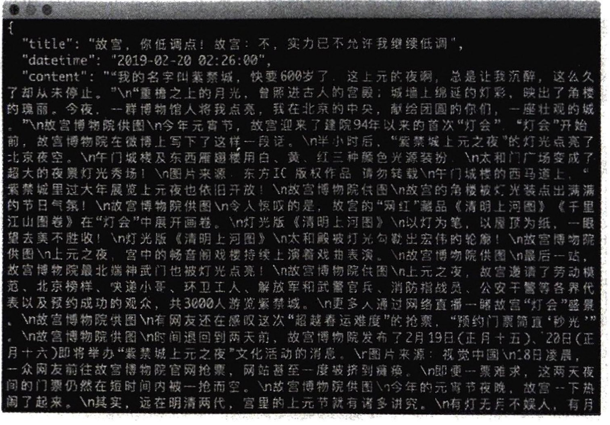
至此,我们成功提取了示例页面的标题、正文和发布时间,并以JSON格式输出这些内容。由于整个提取算法实现起来比较复杂,因此本节对部分代码的逻辑做了简化,不过大家不用担心,我已经将以上提取算法封装成了一个完整的Python包,可以直接调用,感兴趣的话也可以查看其源码。包叫作 GerapyAutoExtractor,可以通过pip3工具安装:
pip3 install gerapy-auto-extractor安装完成后就可以导入使用了,调用流程也非常简单:
from gerapy_auto_extractor import extract_detail
from gerapy_auto_extractor.helpers import content, jsonifyhtml = content('detail.html')
print(jsonify(extract_detail(html)))这里我们调用 content 方法读取了详情页的HTML代码,调用 extract_detail 方法提取了详情页的内容,并调用 jsonify 方法对提取结果进行格式化,运行结果同样如图14-12所示。另外,GerapyAutoExtractor 包还在很多细节上对提取算法进行了优化,大家可以查看其说明来了解更多用法,或者直接查看源码来详细了解本节内容的实现流程。
7. 总结
本节中我们介绍了详情页提取算法的代码实现,不同的内容对应不同的实现思路。本节代码见
https://github.com/Gerapy/GerapyAutoExtractor。14.4 列表页智能解析算法简介
我们在14.2节和14.3节中了解了提取详情页中标题、正文和发布时间的过程,并用代码实现了对应算法。除了智能解析详情页外,我们还需要考虑到列表页。本节中我们来了解一下列表页的智能解析算法,主要包括如下内容。
我们定义的列表页是指怎样的页面。
列表页的哪些信息是我们需要提取的。
介绍列表页的提取算法。
1. 怎样的页面属于列表页
在14.2节,我们已经了解了列表页和详情页的区分方法,这里就不再做对比阐述了。列表页包含一个个详情页的标题和链接,点击其中某个链接,就可以进入对应的详情页,简言之,列表页相当于导航页。图14-13 所示的页面就是一个非常典型的列表页,这里我们就以它为例进行介绍。能够看到,页面主要区域里的新闻列表很醒目,每行都包括新闻的类别、标题和发布时间,点击其中任意一个标题,都能进入对应的新闻详情页。
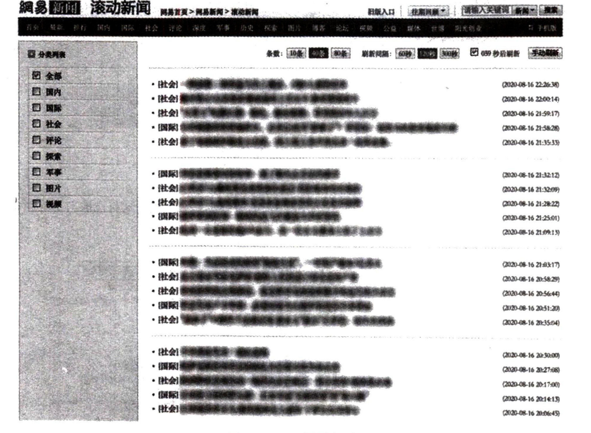
2. 提取内容
我们需要做的是从当前列表页中把详情页的标题和链接提取出来,并以列表的形式返回,例如对于图14-13,我们想要提取的结果就类似如下这样:
[
{
"title":"进入职业大洗牌时代,“吃香”职业还吃香吗?",
"url": "https://new.qq.com/omn/20210828/20210828A025LK00.html "
},
{
"title":"他,活出了我们理想的样子",
"url": "https://new.qq.com/omn/20210821/20210821A020ID00.html "
}
]由于内容较多,这里省略了大部分内容。返回的这个列表中,每一个元素各代表一个详情页,包含标题、链接这两部分内容。如果能够实现这些内容的自动化提取,再结合详情页的自动化提取,那我们不需要编写 XPath,就可以把一个网站的关键信息都爬取下来了。
3. 准备工作
和提取详情页时一样,先把列表页的HTML代码从浏览器里复制出来,并保存为list.html 文件,如图14-14所示。
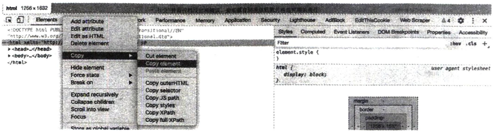
4. 提取思路
要提取列表页中的标题和链接,首先需要观察标题的源代码特征。我们随机选取一个标题查看其源代码,如图14-15所示。
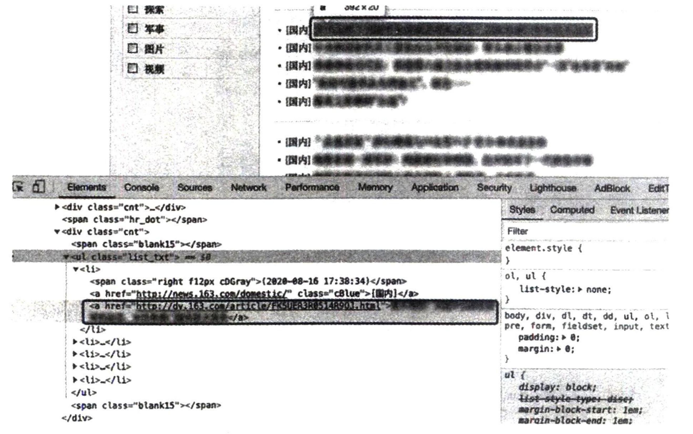
可以发现该标题对应一个a节点,href属性值就是对应的链接,同时这个a节点的前面还有一个a节点,代表这篇新闻所属的类别。这两个a节点的外层是li节点,该li节点有4个兄弟节点,这5个li节点同属一个ul节点。
所以,如果想把当前页面中的所有链接都提取出来,需要提取所有ul节点内所有li节点内的所有类似标题的a节点。初步分析貌似没发现什么通用的规律。如果换成其他列表页,其页面结构可能完全不同,例如不会有li 节点,不会有ul节点,如果我们按照固定的 ul、li等信息来提取,那么算法的可用性是非常低的。既然要实现通用的列表页信息提取算法,关键还是要找一些通用的提取模式。说到这里,可以观察到一个现象:列表里的标题通常是一组一组呈现的,如果仅观察一组,可以发现组内包含多个连续并列的兄弟节点。如果我们把这样连续并列的兄弟节点作为寻找目标,就可以得到这样一个通用的规律:
这些节点是同类型且连续的兄弟节点,数量至少为2个;
这些节点有一个共同的父节点。为了更好地表述算法流程,这里做一下定义,把共同的父节点称为“组节点”,同类型且连续的兄弟节点称为“成员节点”。有了这个规律,来看看从示例列表页中能找到多少满足这个要求的组节点,如图14-16所示。
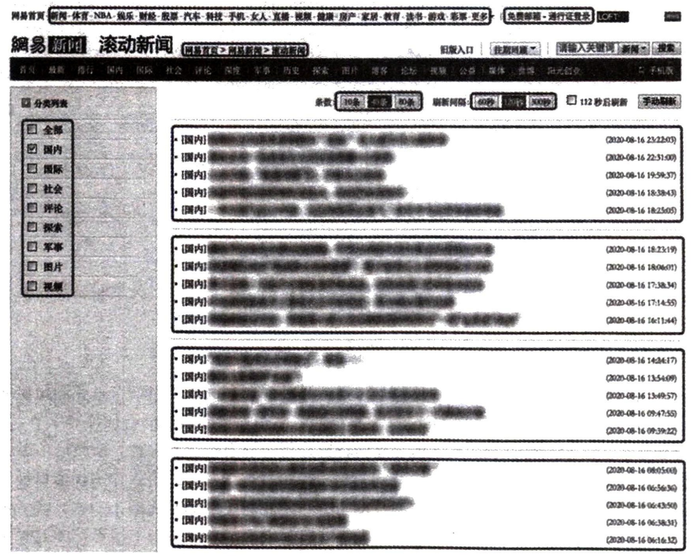
在图 14-16中,我们用矩形框选出了符合要求的组节点,可以看到这样的组节点还是蛮多的。但我们只想要列表中的组节点(目标组节点),因此需要想办法排除其他组节点(冗余组节点)。要想排除冗余组节点,需要先找到目标组节点和冗余组节点的不同。直观来看,最明显的不同当属字数,冗余组节点对应的每个成员节点都比较短,可能就包含2~3个字,而目标组节点对应的成员节点普遍比较长,因此可以利用成员节点的最小平均字数设限,例如平均字数在3以下的成员节点对应的组节点就会被排除。还有其他一些特征也可以利用,例如成员节点的数量,规定一个组节点对应的成员节点
的最小数量为3,也能排除一些不必要的组节点。为了更好地说明算法的思路,我们规定成员节点的最小平均字数为3,一个组节点对应的成员节点的最小数量也为3,经过过滤,剩下的组节点如图14-17所示。
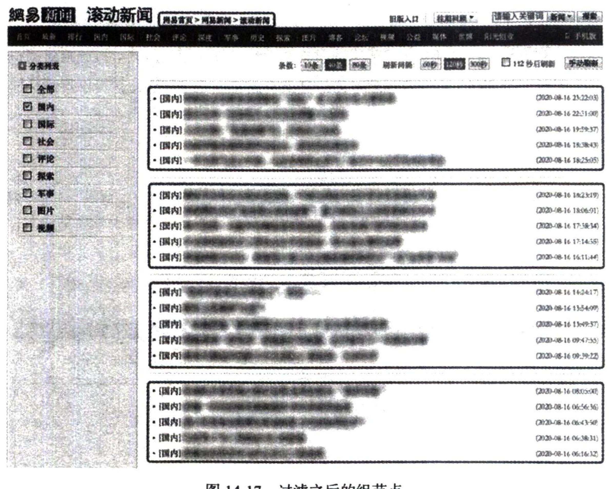
在图14-17中,就只剩下最上方的“网易首页>网易新闻>滚动新闻”这个面包屑导航对应的组节点,还有下方标题列表中的几个组节点了。
下一步该怎么办呢?先想一下我们想要的结果在哪里,对于这里,只有标题列表中的几个组节点是我们想要的。再回想一下14.2节提取详情页正文的逻辑,我们是怎么做的?是根据不同节点的特征计算了节点的分数,最终根据分数排序,选出分数最高的节点作为提取目标,其内容就是正文内容。按照这个思想,这里就是要根据组节点的特征计算每个组节点的分数,然后选出分数最高的组节点作为提取目标。稍等,最高岂不意味着最终结果只有一个,可我们的目标组节点不止一个(实际比图14-17中显示的更多),如果只有一个提取结果,那其他目标组节点的内容不就丢了吗?怎么保留多个结果,这个数量又怎么定成为了我们面临的新问题。在这种情况下,可以考虑“降维”操作,即把同类型的组节点合并为一个组节点,这样一来,图14-17 中的所有目标组节点就会成为一个整体,我们想要提取的节点就都在这个整体内部了,合并后的组节点如图14-18所示。可以看到,下方这个大的组节点包含我们想要提取的所有成员节点,因此最后只要能把这个组节点选出来就好了。至此,我们终于可以使用提取详情页正文时的思想了,计算每个组节点的置信度分数,然后选出分数最高的作为目标组节点。
14.5 列表页智能解析算法的实现
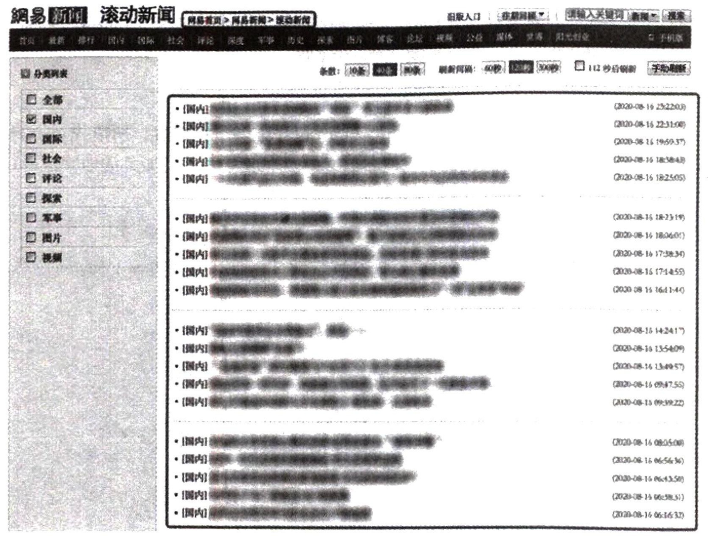
组节点筛选出来了,下一步就是从其内部的所有成员节点内提取标题,这要相对简单一些,例如根据字数、标签信息、超链接信息就能判断出标题对应的节点,提取其中的标题内容和超链接就好了。
5. 总结
经过本节的学习,我们可以自动化地找出页面中所有的标题和链接信息了。总体来说,提取思路分为下面几步。(1) 根据成员节点的特征(同类型且连续)找出所有符合条件的候选组节点。(2) 根据规定的组节点特征(例如字数、成员节点数量等)排除冗余组节点。(3)合并同类型的组节点,总的组节点数量减少。(4)计算置信度分数,从现有组节点中选出最佳组节点。(5)从最佳组节点的所有成员节点内提取标题和链接。这个思路虽然不一定是最优的列表页提取方案,但用来提取大部分列表页的内容应该不是问题。
本节中我们来动手实现列表页的提取算法。
1. 本节目标
还是以图 14-13 所示的页面为例,用代码实现14.4节“总结”部分的提取思路。注意由于部分算法比较复杂,本节介绍的算法是简化后的版本,更多细节处理可以参考本节最后的说明。
2. 准备工作
上一节中我们已经将示例列表页的HTML代码保存下来了，文件名为list.html。另外，本节主要还是用XPath 解析页面和操作节点，所以需要用到 lxml 库。
3. 数据预处理
和提取详情页正文时一样，由于原始 HTML 代码中包含很多干扰内容，所以先对HTML 代码进行预处理，整个预处理方法和提取详情页正文时也基本类似，这里为了更加灵活地修改处理逻辑，单独定义了一个 preprocess4list 方法：
from lxml.html import HtmlElement, etree
LIST_USELESS_TAGS = ['meta', 'style', 'script', 'link', 'video', 'audio', 'iframe', 'source', 'svg', 'path',
'symbol', 'img', 'footer', 'header']
LIST_STRIP_TAGS = ['span', 'blockquote']
LIST_NOISE_XPATHS = [
'//div[contains(@class, "comment")]',
'//div[contains(@class, "advertisement")]',
'//div[contains(@class, "advert")]',
'//div[contains(@style, "display: none")]',
]
def preprocess4list(element: HtmlElement):
"""
preprocess element for list extraction
:param element:
:return:
"""
# 删除标签和其中的内容
etree.strip_elements(element, *LIST_USELESS_TAGS)
# 只移动标签对
etree.strip_tags(element, *LIST_STRIP_TAGS)
remove_children(element, LIST_NOISE_XPATHS)
for child in children(element):
# 将 span 和 strong 节点内的文本合并到父级 p 节点内
if child.tag.lower() == 'p':
etree.strip_tags(child, 'span')
etree.strip_tags(child, 'strong')
if not (child.text and child.text.strip()):
remove_element(child)
# 如果 div 标签不包含任何子节点,它可以被转换为 p 节点
if child.tag.lower() == 'div' and not child.getchildren():
child.tag = 'p'这里同样定义了一些规则，LIST_USELESS_TAGS 代表一些噪声节点，可以直接调用 strip_elements方法把其整个节点和内容删除。LIST_STRIP_TAGS 节点的文本内容需要保留，标签可以删掉。LIST_NOISE_XPATHS 代表一些明显不是列表内容的节点，例如评论、广告等，直接删除就好。其中还用到了工具方法 remove_children、remove_element 等，它们的定义也已经在 14.3 节阐明，这里不再赘述。
4. 选取组节点
现在实现前两步：根据成员节点的特征（同类型且连续）找出所有符合条件的候选组节点，然后根据规定的组节点特征（例如字数、成员节点数量等）排除冗余组节点。
为了方便操作,这里扩展一下 Element 对象的属性:
class Element (HtmlElement):
id: int = None
tag_name: str = None
number_of_char: int = None
number_of_a_char: int = None
number_of_descendants: int = None
number_of_a_descendants: int = None
number_of_p_descendants: int = None
number_of_punctuation: int = None
density_of_punctuation: int = None
density_of_text: float = None
density_score: float = None
#扩展属性
number_of_siblings: int = None
a_descendants_group_text_min_length: int = None
a_descendants_group_text_max_length: int = None
similarity_with_siblings: float = None
parent_selector: str = None这里我们扩展了如下几个属性。number_of_siblings:兄弟节点的数量。用于过滤冗余组节点,当一个节点的兄弟节点的数量小于一定数值时,就过滤掉对应的组节点。a_descendants_group_text_min_length:组节点内成员节点的文本内容的最小长度。用于过滤冗余组节点。a_descendants_group_text_max_length:组节点内成员节点的文本内容的最大长度。同样用于过滤冗余组节点。similarity_with_siblings:节点和兄弟节点的相似度。如果这个相似度过低,那么这些节点可能并不是同类型且连续的节点,对应的组节点也不是我们想要的节点。parent_selector:父节点的选择器。成员节点用它选择组节点,它们是父子关系。接下来就找出同类型且连续的成员节点对应的组节点吧,代码实现如下:
min_number = 5
min_length = 8
max_length = 44
similarity_threshold = 0.8
def build_clusters (element):
descendants_tree = defaultdict(list)
descendants = descendants_of_body(element)
for descendant in descendants:
if descendant.number_of_siblings + 1 < min_number:
continue
if descendant.a_descendants_group_text_min_length > max_length:
continue
if descendant.a_descendants_group_text_max_length < min_length:
continue
if descendant.similarity_with_siblings < similarity_threshold:
continue
descendants_tree[descendant.parent_selector].append(descendant)
descendants_tree = dict(descendants_tree)这里我们先定义了几个阈值。min_number:用于限制兄弟节点的数量,这里定义为5,即成员节点至少要是5个同类型且连续的节点。min_length:用于限制成员节点的文本内容的最小长度,这里定义为8。比较 a_descendants_group_text_max_length 和 min_length的值,如果前者小于后者,也就是组节点内成员节点的文本内容的最大长度小于 8, 就说明该组节点内所有成员节点的文本内容都很短, 而标题一般得 8 个字以上, 说明该组节点内不可能包含标题, 就把它排除了。用这个阈值可以过滤掉很多导航菜单组节点。
max_length: 用于限制成员节点的文本内容的最大长度, 这里定义为 44。比较 a_descendants_group_text_min_length 和 max_length 的值, 如果前者大于后者, 也就是组节点内成员节点的文本内容的最小长度大于 44, 就说明该组节点内所有成员节点的文本内容都很长, 而标题一般最多 40 字, 说明该组节点内不可能包含标题, 同样把它排除了。用这个阈值可以过滤掉很多长文本组节点。
similarity_threshold: 用于限制兄弟节点的相似度, 这里可以用 tag_name、class 属性值、子节点的数量或其他属性来判断节点的相似度, 例如 <a title="block" class="item item-1"></a>和 <a title="block" class="item item-2"></a> 的相似度是比较高的, 而 <a title="block" class="item item-1"> 和 <span class="bold"></span> 的相似度就很低。如果成员节点的相似度很低, 就证明这个组节点里根本没有同类型且连续的成员节点, 那么这个组节点就不能作为目标组节点了。这里我们将 descendants_tree 定义为了 defaultdict(list) 类型, 其键名是父节点的选择器, 键值是成员节点组成的列表。运行上述代码, 就能得到一些符合要求的组节点了, 结果如图 14-19 所示。
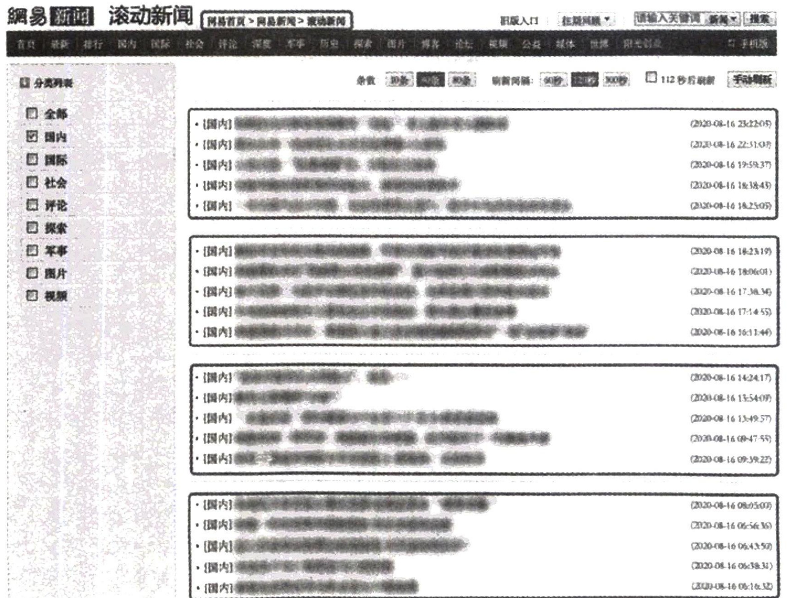
5. 合并组节点
现在要根据相似度合并组节点了, 怎么计算相似度呢?简单来说可以直接使用选择器的路径表达式, 相似组节点对应的选择器相似度一定很高。例如这里一共有 5 个组节点的 XPath 路径表达式:
/html/body/div[@class="main"]/div[1]/ul
/html/body/div[@class="main"]/div[2]/ul
/html/body/div[@class="main"]/div[3]/ul
/html/body/header/div[1]
/html/body/header/div[2]你能找出哪些组节点属于同一组吗?很明显,前3个属于同一组,后2个属于同一组。那么如何用算法实现呢?这个算法属于聚类的范畴了。聚类就是把相似的内容聚在一起成为一堆,聚类方法有很多,例如 K-means、DBSCAN等,不过这里我们仅仅根据选择器聚类。一个简单的聚类方法如下:
def cluster (items, threshold=0.9):
number = -1
clusters_map = {}
clusters = []
for name in items:
for c in clusters:
if all(similarity (name, w) > threshold for w in c):
c.append(name)
clusters_map[name] = number
break
else:
number += 1
clusters.append([name])
clusters_map[name] = number
return clusters_map
def cluster_dict(data: dict, threshold=0.9):
ids = data.keys()
clusters_map = cluster(ids, threshold)
result = defaultdict(list)
for k, v in data.items():
if isinstance(v, list):
for i in v:
result[clusters_map[k]].append(i)
else:
result[clusters_map[k]].append(v)
return dict(result)这里的 cluster_dict 就是对字典类型的内容进行聚类处理,其输入数据就是 defaultdict(list)类型的,键名是父节点的选择器,键值是成员节点列表。
这里我们可以根据上面的例子测试一下:
data = {
'/html/body/div[@class="main"]/div[1]/ul': ['child1', 'child2', 'child3'],
'/html/body/div[@class="main"]/div[2]/ul': ['child4', 'child5', 'child6'],
'/html/body/div[@class="main"]/div[3]/ul': ['child7', 'child8', 'child9'],
'/html/body/header/div[1]': ['child10', 'child11', 'child12'],
'/html/body/header/div[2]': ['child13', 'child14', 'child15'],
}
print(cluster_dict(data, threshold=0.7))运行结果如下:
{0: ['child1', 'child2', 'child3', 'child4', 'child5', 'child6', 'child7', 'child8', 'child9'], 1: ['child10',
'child11', 'child12', 'child13', 'child14', 'child15']}可以看到成功把前3个组节点聚在一起了,成为第一组,另外2个组节点则聚为第二组,和我们肉眼观察到的结果一致。
接下来调用 cluster_dict 方法对上一步的 descendants_tree 进行聚类处理:
clusters = cluster_dict(descendants_tree)这样得到的结果就是合并后的组节点了,结果变成图14-20所示的这样。
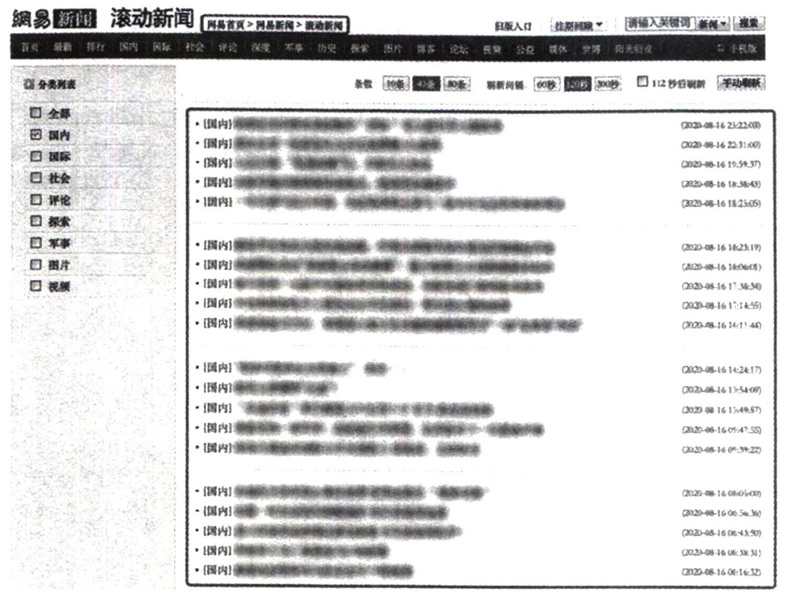
6. 挑选最佳组节点
现在要从所有组节点中挑选最佳组节点,同样是依据多个指标计算各个组节点的分数。依据的指标有很多,例如成员节点的数量、平均字数分布、文本密度等,分数的计算公式可以自行设计。下面实现一个挑选方法:
def choose_cluster(clusters):
clusters_score = defaultdict(dict)
clusters_score_arg_max = 0
clusters_score_max = -1
for cluster_id, cluster in clusters.items():
clusters_score[cluster_id] = evaluate_cluster(cluster)
if clusters_score[cluster_id]['clusters_score'] > clusters_score_max:
clusters_score_max = clusters_score[cluster_id]['clusters_score']
clusters_score_arg_max = cluster_id
best_cluster = clusters[clusters_score_arg_max]
return best_cluster这里向 choose_cluster 方法传入上一步得到的合并后的所有组节点,然后evaluate_cluster 方法会计算每一个组节点的得分,最后返回得分最高的组节点。
其中 evaluate_cluster 方法比较关键,就是实现分数计算的方法,下面给出一个参考实现:
def evaluate_cluster(cluster):
score = dict()
score['avg_similarity_with_siblings'] = np.mean(
[element.similarity_with_siblings for element in cluster])
score['number_of_elements'] = len(cluster)
score['size'] = get_element_size(cluster)
score['clusters_score'] = \
score['avg_similarity_with_siblings'] \
* np.log10(score['number_of_elements'] + 1) \
* np.log10(score['size'])
return score可以看到,这个方法根据成员节点的相似度、数量和节点大小计算出了组节点的分数。拿上面的案例来说,由于标题列表中的组节点对应的成员节点数量更多、节点更大,因此最终得到的分数也更高,自然就被选为最佳组节点了。
7. 提取标题和链接
最佳组节点已经选出来了,如果这个结果是正确的,那么其每个成员节点里就包含着我们想要提取的标题和链接。例如在上面的例子中,一个成员节点就是一个li节点,其源码为:
<li>
<span class="right f12px CDGray">(2020-08-17 04:46:38)</span>
<a href="http://news.163.com/domestic/" class="cBlue">[国内]</a>
<a href="https://news.163.com/20/0817/04/FK74004300018990.html">陕西汉中略阳县主城区被淹当地启动一级
应急响应</a>
</li>可以看到这个li节点内包含一个span 节点,两个节点,其中第二个节点才包含我们想要提取的标题和链接信息。我们怎么用算法自动提取li节点内的第二个节点呢?同样可以根据一些特征,这里最明显的特征就是字数了。字数有什么规律呢?经过大量统计,可以发现标题长度是满足高斯分布的,其概率密度函数为:公式: f(x)=1/(√(2π)σ) exp(-(x-μ)^2/(2σ^2))如果我们把这个概率密度函数应用到标题长度分布上,那么 μ 就是标题长度的均值,σ 就是标题长度的标准差。这里为了拟合一个较为合适的概率密度曲线,经过调优,µ取了26,σ取了6,拟合的概率密度曲线如图14-21所示。
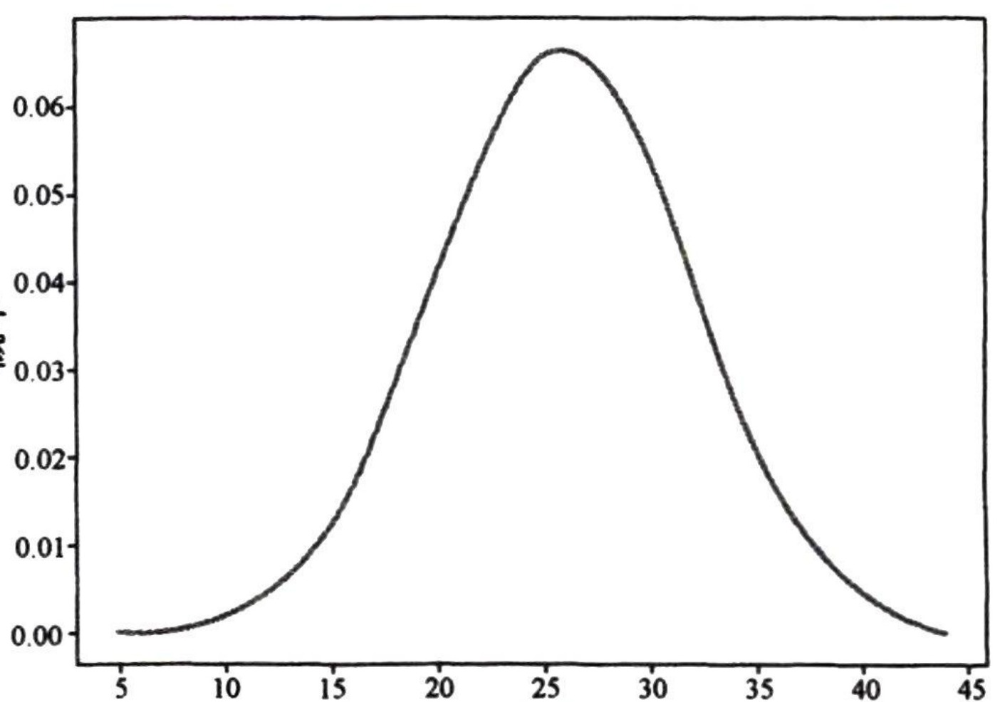
根据图 14-21 中的曲线,标题长度为26的概率最高,随着标题长度的减小或增大,概率会逐渐减小。当长度小于5的时候,概率已经趋近于0,事实上一篇新闻的标题少于5个字的概率确实非常小。通过这个方式,我们能够筛选出更贴近于标题的节点,例如上文中第二个节点计算得到的概率就比第一个节点的概率更大,因此会倾向于选择第二个节点。当然,仅仅依靠单个节点计算还是不够科学,更优的方法是针对整个组节点内所有可能的同类a节点,计算总体置信度,然后选出第二个节点对应的选择器路径,再统一按照这个路径查找标题。根据标题长度获取置信度的方法实现如下:
def probability_of_title_with_length(length):
sigma = 6
return np.exp(-1 * ((length - avg_length) ** 2) / (2 * (sigma ** 2))) / (math.sqrt(2 * np.pi) * sigma)这里其实就是实现了高斯分布的概率密度函数，接收标题的长度值，返回对应的概率。借助这个方法，可以实现标题的提取逻辑：
def extract_cluster(cluster):
#寻找标题的最优节点路径
probabilities_of_title = defaultdict(list)
for element in cluster:
descendants = element.a_descendants
for descendant in descendants:
path = descendant.path
descendant_text = descendant.text
probability_of_title_with_length = probability_of_title_with_length(len(descendant_text))
probability_of_title = probability_of_title_with_length
probabilities_of_title[path].append(probability_of_title)
#寻找最可能的节点路径
probabilities_of_title_avg = {k: np.mean(v) for k, v in probabilities_of_title.items()}
if not probabilities_of_title_avg:
return None
best_path = max(probabilities_of_title_avg.items(), key=operator.itemgetter(1))[0]
#根据最优路径提取内容
result = []
for element in cluster:
descendants = element.a_descendants
for descendant in descendants:
path = descendant.path
if path != best_path:
continue
title = descendant.text
url = descendant.attrib.get('href')
result.append({
'title': title,
'url': url
})
return result这里我们定义了一个 extract_cluster 方法，参数是组节点的信息，遍历它可以得到所有成员节点。对于每个成员节点，提取其所有的 a 节点，然后根据 probability_of_title_with_length 方法计算出每个 a 节点可能是标题的概率，同时记录这个 a 节点相对成员节点的节点路径。接着根据上一步计算得到的置信度找出最优的 a 节点路径，即 best_path。最后根据 best_path 去成员节点里提取标题和链接，并组成一个列表返回。
至此，我们完成了列表页的提取。
8. 整合
由于整个提取算法实现起来比较复杂，所以上述内容简化了部分代码逻辑。我已经将整个提取算法封装成了一个完整的 Python 包，大家可以直接调用，感兴趣的话也可以查看其源码。
这个包叫作 GerapyAutoExtractor，在 14.3 节已经介绍过，可以通过 pip3 工具安装：
pip3 install gerapy-auto-extractor安装完成后便可以导入使用，调用流程非常简单：
from gerapy_auto_extractor import extract_list
from gerapy_auto_extractor.helpers import content, jsonify
html = content('list.html')
print(jsonify(extract_list(html)))这里调用 content 方法读取了列表页的 HTML 代码，调用 extract_list 方法提取了列表页的内容，并调用 jsonify 方法对提取结果进行了格式化，运行结果如下：
[
{
"title":"进入职业大洗牌时代,“吃香”职业还吃香吗?",
"url": "https://new.qq.com/omn/20210828/20210828A025LK00.html"
},
{
"title":"他,活出了我们理想的样子",
"url": "https://new.qq.com/omn/20210821/20210821A020ID00.html "
}
]可以看到,示例列表页的标题和链接被提取出来了。另外,GerapyAutoExtractor 包在很多细节上对提取算法进行了优化,大家可以查看其说明来了解更多用法,也可以直接查看源码来详细了解本节介绍的实现流程。
9. 总结
本节中我们介绍了列表页提取算法的代码实现,同样无须任何规则,经过一定的算法和节点结构分析后便可以得到想要的新闻列表数据。本节代码见 https://github.com/Gerapy/GerapyAutoExtractor。
14.6 如何智能分辨列表页和详情页
在前面几节,我们介绍了详情页和列表页的内容提取方案,传入对应的HTML代码就能获取对应的提取结果了。但这里有个问题,就是在调用提取方法之前,需要先分辨哪种页面是列表页,哪种是详情页。这自然而然引出了一个问题:能否用一个算法来区分列表页和详情页,直接根据算法返回的结果调用对应的提取方法,从而省掉很多麻烦?
1. 本节目标
本节中我们需要设计一个算法来自动区分列表页和详情页,要求是传入一个页面的HTML代码,然后返回分类结果和对应的分类概率。下面我们就来了解其基本思路和算法实现吧。
2. 问题分析
我们首先分析这个问题属于什么问题。其实很明显,既然要返回分类结果(要么是列表页,要么是详情页),那么就可以把它归为二分类问题。注意这里我们不考虑特殊页面(例如登录页面、注册页面等),并把非列表页和详情页的页面一律归为其他页面,如果把此类页面也考虑进去,本节的问题就是三分类问题,在此为了方便,仅分析二分类问题。二分类问题怎么解决呢?实现一个基本的分类模型就好了,大范围是传统机器学习和现在比较流行的深度学习。总体上讲,深度学习的精度要高一点,处理能力也强一点。想想我们的应用场景,要追求精度的话可能需要更多的标注数据,而我们也有比较不错的易用模型,例如SVM。所以,不妨先用SVM 模型实现一个基本的二分类模型试试看,如果效果已经很好或者提升空间不大了,就直接用;如果效果已经比较差,再选用其他模型做优化。
3. 数据标注
既然要实现分类模型,最重要的当然是数据标注,这里分两组数据,一组是列表页数据,一组是详情页数据。先手工配合爬虫找一些列表页和详情页的HTML代码(例如新闻网站、博客网站的列表页和详情页,覆盖的网站越多,训练得到的分类器就越准确),然后将它们保存下来。经过一些收集和处理,将列表页和详情页的HTML代码保存在两个文件夹中,分别取名为 list 和detail,结果类似图14-22 这样。
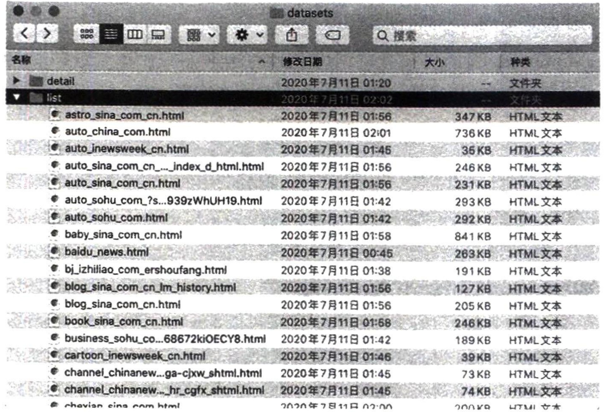
每个文件夹里保存几百份HTML代码就行了,不用太多。接下来从这些代码里提取特征,然后实现一个二分类模型。
4. 特征提取
选用 SVM 模型,首先得想清楚一件事:要分清两个类别,需要哪些特征。既然是特征,就要选出各自独有的特征,才更有区分度。这里总结了几个可以用来区分列表页和详情页的特征。
文本密度:详情页通常包含密集的文字,例如一个p 节点内部就包含几十甚至上百个文字,如果用单个节点内的文字数量表示文本密度,那么详情页的文本密度会很高。
超链接节点的数量和比例:列表页通常包含多个超链接,而且有很大一部分是超链接文本;详情页则包含更多的文字,超链接很少。
符号密度:列表页通常相当于标题导航页,很少包含句号,而详情页的正文内容普遍包含句号,如果用单位文字包含的句号数量来表示符号密度,那么详情页的符号密度会很高。
列表簇的数量:列表页常常包含多组具有共同父节点的条目,多个条目构成一个列表簇。虽说详情页的侧栏也会有一些列表,但至少这个数量和列表页的相比,是可以分清的。
meta 信息:有一些特殊的 meta信息是列表页独有的,例如详情页往往包含发布时间,列表页则通常没有。
正文标题和 title 内容的相似度:一般来说,详情页的正文标题和title 内容很可能相同,而列表页的 title 内容通常是网站名称。以上便是几个基本的特征,此外其他一些特征也可以自行挖掘并使用,例如视觉信息、节点大小。
5. 模型实现
代码实现的过程就是对现有的HTML代码做预处理,提取出上面的基本特征,然后声明一个SVM分类模型。先声明一个特征列表和特征对应的获取方法:
self.feature_funcs = {
'number_of_a_char': number_of_a_char,
'number_of_a_char_log10': self._number_of_a_char_log10,
'number_of char': number_of_char,
'number_of_char_log10': self._number_of_char_log10,
'rate_of_a_char': self._rate_of_a_char,
'number_of_p_descendants': number_of_p_descendants,
'number_of_a_descendants': number_of_a_descendants,
'number_of_punctuation': number_of_punctuation,
'density_of_punctuation': density_of_punctuation,
'number_of_clusters': self._number_of_clusters,
'density_of_text': density_of_text,
'max_density_of_text': self._max_density_of_text,
'max_number_of_p_children': self._max_number_of_p_children,
'has_datetime_meta': self._has_datetime_mata,
'similarity_of_title': self._similarity_of_title,
}
self.feature_names = self.feature_funcs.keys()然后就是关键部分——处理数据和训练模型:
list_file_paths = list(glob (f'{DATASETS_LIST_DIR}/*.html'))
detail_file_paths = list(glob(f'{DATASETS_DETAIL_DIR}/*.html'))
x_data, y_data = [], []
for index, list_file_path in enumerate(list_file_paths):
logger.log('inspect', f'list_file_path {list_file_path}')
element = file2element(list_file_path)
if element is None:
continue
preprocess4list_classifier(element)
x = self.features_to_list(self.features (element))
x_data.append(x)
y_data.append(1)
for index, detail_file_path in enumerate (detail_file_paths):
logger.log('inspect', f'detail_file_path {detail_file_path}')
element = file2element(detail_file_path)
if element is None:
continue
preprocess4list_classifier(element)
x = self.features_to_list(self.features (element))
x_data.append(x)
y_data.append(0)
#预处理数据
ss = StandardScaler()
x_data = ss.fit_transform(x_data)
joblib.dump(ss, self.scaler_path)
x_train, x_test, y_train, y_test = train_test_split(x_data, y_data, test_size=0.2, random_state=5)
# 设置 Grid Search
c_range = np.logspace (-5, 20, 5, base=2)
gamma_range = np.logspace(-9, 10, 5, base=2)
param_grid = [
{'kernel': ['rbf'], 'C': c_range, 'gamma': gamma_range},
{'kernel': ['linear'], 'C': c_range},
]
grid = GridSearchCV(SVC(probability=True), param_grid, cv=5, verbose=10, n_jobs=-1)
clf = grid.fit(x_train, y_train)
y_true, y_pred = y_test, clf.predict(x_test)logger.log('inspect', f'\n{classification_report(y_true, y_pred)}')
score = grid.score(x_test, y_test)
logger.log('inspect', f'test accuracy {score}')
# 保存模型
joblib.dump(grid.best_estimator_, self.model_path)这里首先对数据做预处理,将特征保存到 x_data中,将标注结果保存到 y_data 中。接着使用StandardScaler 对数据进行标准化处理,并进行随机切分。最后使用 Grid Search 训练了一个SVM模型并保存下来。以上便是基本的模型训练过程,具体代码可以自己再完善一下。
6. 使用
将保存的模型用于分类处理就好了。我已经把使用流程放在 GerapyAutoExtractor 包里面了,大家可以使用 pip3工具安装:
pip3 install gerapy-auto-extractor这个包针对于以上算法提供了4个方法。is_detail:判断一个页面是否是详情页。is_list:判断一个页面是否是列表页。probability_of_detail:一个页面是详情页的概率,返回结果是0~1。probability_of_list:一个页面是列表页的概率,返回结果是0~1。例如,随便找个网址,把列表页和详情页的HTML代码分别保存为list.html 文件和 detail.html 文件。然后用如下代码做测试:
from gerapy_auto_extractor import is_detail, is_list, probability_of_detail, probability_of_list
from gerapy_auto_extractor.helpers import content, jsonify
html = content('detail.html')
print(probability_of_detail(html), probability_of_list(html))
print(is_detail(html), is_list(html))
html = content('list.html')
print(probability_of_detail(html), probability_of_list(html))
print(is_detail(html), is_list(html))这里就调用上述4个方法判断了两个页面的类型和置信度。运行结果如下:
0.9990605314033392 0.0009394685966607814
True False
0.033477426883441685 0.9665225731165583
False True可以看出,我们得到了正确的页面类型和置信度。
7. 总结
本节介绍了判断页面是列表页还是详情页的原理和代码实现,如需了解更多细节,可以参考Gerapy AutoExtractor项目的源码。本节代码见 https://github.com/Gerapy/GerapyAutoExtractor。至此,我们完成了详情页和列表页的内容提取以及详情页和列表页的分辨,有了这三类算法,就可以完成大部分新闻页面的智能解析了。